Abstract
The Hubble Tension—the persistent 5σ discrepancy between local distance-ladder measurements ($H_0 \approx 73$ km/s/Mpc) and early-universe CMB inference ($H_0 = 67.4 \pm 0.5$ km/s/Mpc)—represents a significant challenge in precision cosmology. This paper tests whether a component of the Hubble tension can be represented as an environment-dependent Cepheid clock bias, as predicted by the Temporal Equivalence Principle (TEP).
This study tests the hypothesis that the discrepancy arises from a violation of the isochrony axiom—the assumption that proper time accumulation is independent of the local gravitational environment. Under scalar-tensor theories that break the Strong Equivalence Principle (such as TEP), Cepheid variable stars act as environment-dependent "standard clocks." In deep gravitational potentials (high velocity dispersion $\sigma$) and active-shear environments, enhanced scalar field activity is predicted to induce period contraction relative to calibration environments. When interpreted through a universal Period-Luminosity relation, this clock-rate anomaly would mimic diminished luminosity, leading to underestimated distances and an inflated local Hubble constant.
Analysis of the SH0ES Cepheid sample ($N=29$), stratified by host galaxy velocity dispersion (a TEP-independent kinematic observable), reveals a statistically significant correlation between host potential depth and derived $H_0$ (Spearman $\rho = 0.511$, $p = 0.0046$; Pearson $r = 0.462$, $p = 0.0116$). A median-split stratification at $\sigma_{\rm med} \approx 90$ km/s yields $H_0 = 67.82 \pm 1.62$ km/s/Mpc (low-$\sigma$; $N=15$) versus $72.45 \pm 2.32$ km/s/Mpc (high-$\sigma$; $N=14$), implying $\Delta H_0 = 4.63$ km/s/Mpc. Because published $\sigma$ values are heterogeneous (direct stellar absorption and calibrated HI/rotation proxies), measurement methodology is treated as a first-class provenance variable and covariance-aware significance tests are reported using the full SH0ES GLS distance-modulus covariance.
Application of the TEP conformal correction $\Delta\mu = \kappa_{\rm Cep}\cdot S(\rho)\cdot(\sigma^2-\sigma_{\rm ref}^2)/c^2$—derived from the TEP period-contraction combined with the virial relation $|\Phi|\propto\sigma^2$—with Observable Response Coefficient $\kappa_{\rm Cep} = (1.05 \pm 0.43) \times 10^6$ mag and effective calibrator reference $\sigma_{\rm ref} = 75.25$ km/s yields a unified local Hubble constant of $H_0 = 68.17$ km/s/Mpc (bootstrap mean $68.14 \pm 1.49$), corresponding to a Planck tension of $0.49\sigma$. The inferred $\kappa_{\rm Cep}\sim10^6$ places this probe in the same response-coefficient regime as the millisecond-pulsar spin-down excess (Paper 10), reducing the apparent cross-probe mismatch at the observable-response level compared with earlier phenomenological $\log_{10}\sigma$ scalings. Out-of-sample validation (train/test splits and LOOCV) shows that the fitted response coefficient is stable and removes the residual environmental trend in held-out hosts. A differential analysis within M31 yields an "Inner Fainter" signal in HST photometry. Within the TEP v0.8 framework, this sign is consistent with continuous shear suppression: the high-density M31 bulge experiences progressive attenuation of Temporal Shear (suppression factor $S \approx 0.05$ at $R < 1$ kpc), while the lower-density SN Ia host disks remain in the active-shear regime ($\langle S \rangle = 0.946$). On this interpretation, the M31 signal marks the empirical mapping of a continuous environmental shear-suppression profile across a single galaxy.
Keywords: Hubble tension – Cepheid variables – distance ladder – velocity dispersion – temporal equivalence principle – gravitational time dilation
1. Introduction
1.1 The Hubble Tension: A Crisis in Cosmology
The Hubble constant $H_0$—the present-day expansion rate of the universe—anchors the cosmic distance scale. Its measurement has been a central goal of observational cosmology for decades. Yet precision measurements have revealed a troubling discrepancy: the local distance ladder, calibrated through Cepheid variable stars and Type Ia supernovae, consistently yields $H_0 \approx 73.0 \pm 1.0$ km/s/Mpc (Riess et al. 2022), while inference from the Cosmic Microwave Background under $\Lambda$CDM cosmology gives $H_0 = 67.4 \pm 0.5$ km/s/Mpc (Planck Collaboration 2020).
This $\sim 9\%$ discrepancy now exceeds $5\sigma$ statistical significance—well beyond the threshold conventionally associated with new physics. Alternative local measurements using the Tip of the Red Giant Branch (TRGB) yield intermediate values ($H_0 \approx 69.8 \pm 1.6$ km/s/Mpc; Freedman et al. 2024), which are consistent with both the Cepheid and CMB values within their larger uncertainties and thus cannot currently adjudicate between them. Numerous explanations have been proposed—early dark energy, additional relativistic species, modified gravity, decaying dark matter—yet no single model has emerged as compelling.
1.2 The Clock Hypothesis: Isochrony Violation
This work explores an alternative explanation rooted in the fundamental measurement physics. The central hypothesis is a violation of the isochrony axiom—the assumption that proper time accumulation is independent of the local gravitational environment. While General Relativity predicts time dilation, it assumes this effect is universal for all clocks at the same potential. Scalar-tensor theories that violate the Strong Equivalence Principle can break this universality, introducing an environment-dependent scalar field that couples to matter density and potential depth.
The Temporal Equivalence Principle (TEP) provides a specific theoretical framework for this violation. TEP extends General Relativity by introducing a scalar field $\phi$ that mediates an additional gravitational interaction, with the action $S = \int d^4x \sqrt{-g} \left[ \frac{M_{\rm Pl}^2}{2} R - \frac{1}{2}(\nabla_\mu \phi)(\nabla^\mu \phi) - V(\phi) \right] + S_m[\tilde{g}_{\mu\nu}, \Psi_m]$, where $R$ is the Ricci scalar, $V(\phi)$ is the scalar potential, and $S_m$ is the matter action. The key feature is the disformal coupling: matter fields $\Psi_m$ couple not to the Einstein-frame metric $g_{\mu\nu}$ but to the Jordan-frame metric $\tilde{g}_{\mu\nu} = A^2(\phi) g_{\mu\nu} + B(\phi) \nabla_\mu\phi \nabla_\nu\phi$, where $A(\phi) = \exp(\beta\phi/M_{\rm Pl})$ is the conformal factor and $B(\phi)$ encodes the disformal coupling. In the weak-field limit relevant to galactic potentials, the disformal term is subdominant and the conformal factor expands as
For a clock following a worldline in spacetime, proper time is measured in the Jordan frame. In the weak-field, non-relativistic limit where $\phi$ tracks the Newtonian potential $\Phi$, the conformal factor expands as $A(\phi) \approx 1 - \eta_{\rm clock} \Phi/c^2$, where $\eta_{\rm clock}$ is the effective clock-rate response coefficient. The effective proper time interval measured by a local clock becomes $d\tau = A(\Phi) \, d\tau_{\rm GR} = (1 - \eta_{\rm clock} \Phi/c^2) d\tau_{\rm GR}$, where $d\tau_{\rm GR} \approx (1 + \Phi/c^2) dt$ is the standard Schwarzschild time dilation. In deep potentials ($\Phi \ll 0$), if $\eta_{\rm clock} > 1$, the TEP term can exceed the geometric term, causing clocks to run faster rather than slower—a departure from standard GR expectations. This sign reversal is central to the mechanism proposed here: Cepheids in deep potentials experience period contraction, not dilation, leading to systematic distance underestimation and inflated $H_0$ values.
An important feature distinguishes TEP from conventional scalar-tensor theories: the scalar field gradient (Temporal Shear) is progressively suppressed by ambient matter density through a continuous spatial profile (Temporal Shear). In dense environments, large matter gradients attenuate the scalar field gradient, recovering standard GR; in diffuse environments, the gradient tracks the background potential, producing measurable clock-rate anomalies. The suppression is quantified by a dimensionless shear-suppression factor $S(\rho) \in [0,1]$, with $S(\rho) = [1 + (\rho/\rho_{\rm half})^2]^{-1}$ where $\rho_{\rm half} \approx 0.5\,M_\odot/\text{pc}^3$ is the galactic half-suppression density. The associated series-level saturation scale is denoted $\rho_{\rm T}$, the Temporal Topology saturation density. It is not used here as a binary local-density switch; local suppression depends on environmental state, source screening, and the active Temporal Shear sector. The galactic-scale $\rho_{\rm half}$ emerges from SPARC rotation-curve normalizations.
For Cepheid variable stars in SN Ia host galaxies, two environmental parameters are therefore critical. First, the gravitational potential depth (traced by velocity dispersion $\sigma$) drives the magnitude of the TEP effect; deeper potentials cause stronger period contraction when Temporal Shear is active. Second, the local density modulates the response coefficient via $S(\rho)$: if $\rho \gg \rho_{\rm half}$, shear is strongly suppressed and the clock-rate anomaly is attenuated. Most SN Ia host environments are diffuse disks ($\rho \ll \rho_{\rm half}$), placing them in the active-shear regime ($S \approx 1$) where the field scales with potential. Dense environments like bulges experience progressive shear attenuation ($S < 1$), reducing the effect. This duality—potential drives the magnitude while density modulates the response coefficient—is central to the interpretation of the M31 differential test. The key observational proxy for TEP effects in active-shear galaxies is the velocity dispersion $\sigma$, via the virial theorem: $\sigma^2 \propto GM/R \propto |\Phi|$. Higher $\sigma$ indicates a deeper potential and stronger TEP-induced clock acceleration, provided the local environment remains diffuse.
1.3 Cepheids as Environmental Clocks
Cepheid variable stars function not merely as standard candles, but as standard clocks. Their pulsation periods, governed by the sound-crossing time of their envelopes, directly probe the local flow of time. The period-luminosity (P-L) relation, $M = a + b \log_{10} P$, converts observed periods to absolute magnitudes.
Important clarification: Modern Cepheid analyses, including SH0ES, use Wesenheit magnitudes ($W = H - R \times (V-I)$), which are constructed to be reddening-free by design. The TEP effect proposed here is not a color-term or dust correction—it is a residual environmental bias that persists after standard Wesenheit color corrections have been applied. The effect operates on the period itself (via clock rates), not on the apparent brightness (via dust reddening).
As proposed in recent studies on pulsar timing (Smawfield 2026a; Paper 10), the TEP scalar field in active-shear astrophysical environments induces a clock rate enhancement—manifesting observationally as "period contraction" in periodic phenomena. Paper 10 reports a 0.58 dex spin-down excess in globular cluster pulsars compared to field controls, consistent with TEP predictions for intermediate-scale time-dilation enhancement ($\kappa_{\rm Cep} \sim 10^6$–$10^7$). Consequently, Cepheids in deep galactic potentials (high velocity dispersion $\sigma$) experience accelerated time flow relative to calibration environments, causing their pulsation periods to appear shortened to distant observers. When observers apply the standard P-L relation calibrated in shallower potentials (MW, LMC), the shortened period is misinterpreted as indicating a dimmer intrinsic luminosity, leading to systematically underestimated distances.
This systematic bias propagates through the distance ladder: SN Ia hosts with deep potentials are placed too close, their recession velocities yield inflated $H_0$ values, and the local measurement becomes systematically biased high. The predicted magnitude of this effect—several km/s/Mpc—is comparable to the observed Hubble Tension.
1.4 Caveats and Risk Assessment
This analysis has several limitations that affect the strength of inference. Table 1 summarizes the key risks, current mitigations, and required next steps to strengthen the conclusions.
| Risk | Current mitigation | Required next step |
|---|---|---|
| Heterogeneous velocity dispersions | Provenance variable | Uniform spectroscopy |
| Small host sample | Bootstrap/LOOCV | Independent SN-host sample |
| Cepheid metallicity/dust degeneracy | Covariance-aware controls | Joint dust-metallicity-potential fit |
| TEP coefficient fitted on same sample | Validation splits | External prior or blind prediction |
1.5 Scope and Structure
This paper presents a quantitative test of the TEP explanation for the Hubble Tension. Stratification of the SH0ES Cepheid host galaxies by directly measured velocity dispersion (Section 2) reveals the predicted environment-dependent bias in derived $H_0$ (Section 3.1). Application of the TEP correction then unifies the sample (Section 3.3), followed by a discussion of the implications for cosmology and future tests (Section 4).
2. Methodology
2.1 Data Sources and Sample Selection
This analysis leverages the SH0ES 2022 data release (Riess et al. 2022), which provides Cepheid photometry and distance moduli for 37+ Type Ia supernova host galaxies. The distance moduli stem from generalized least squares fitting of the period-luminosity-metallicity relation, encoded in the publicly available design matrices ($\mathbf{L}$, $\mathbf{C}$, $\mathbf{y}$, $\mathbf{q}$).
Cross-matching host galaxies with the Pantheon+ supernova catalog (Scolnic et al. 2022) yields Hubble-flow redshifts ($z_{\rm HD}$). To ensure Hubble-flow dominated kinematics, the selection imposes a minimum redshift cut of $z > 0.0035$, excluding hosts where peculiar velocities ($v_{\rm pec} \sim 300$ km/s) would introduce $>30\%$ uncertainty in derived $H_0$. The final sample comprises $N = 29$ SN Ia host galaxies.
Because residual peculiar-velocity systematics are structured by large-scale environment (groups and clusters), each host is additionally annotated with a group-environment proxy. Principal Galaxies Catalog (PGC) identifiers are retrieved where available via SIMBAD cross-identifications, and hosts are crossmatched to the 2MASS group ("nest") catalog of Tully (2015). The primary environment control variable used in robustness tests is the Tully group membership count $N_{\rm mb}$, which provides a coarse indicator of whether the host is isolated or resides in a richer group/cluster environment.
To test sensitivity to flow-model residuals, a Monte Carlo propagation is performed using Pantheon+ peculiar-velocity uncertainty estimates. For each host, the recession velocity is perturbed as $v \rightarrow v + \delta v$ with $\delta v \sim \mathcal{N}(0,\sigma_{v_{\rm pec}})$, where $\sigma_{v_{\rm pec}}$ is taken from the Pantheon+ column $\mathrm{VPECERR}$ (with a conservative fallback of 250 km/s if unavailable). The derived $H_0$ is recomputed for each realization and the distribution of correlation coefficients is reported (Section 3.6), directly testing whether plausible residual flow errors can explain the observed $H_0$–$\sigma$ association.
2.2 Velocity Dispersion as a TEP-Independent Proxy
A critical methodological consideration is that any proxy for gravitational potential depth must be TEP-independent—that is, its measurement must not depend on assumptions about universal time flow. Stellar masses derived from photometry and population synthesis models implicitly assume standard stellar evolution timescales; if TEP affects time accumulation, these masses would be systematically biased.
Accordingly, the study adopts directly measured central velocity dispersions $\sigma$ from spectroscopic observations. Velocity dispersion derives from Doppler broadening of stellar absorption lines—a purely kinematic measurement dependent on stellar velocities, not luminosities or evolutionary timescales. This makes $\sigma$ a robust, TEP-independent observable.
Data compilation draws from HyperLEDA, SDSS spectroscopy, and the literature (Ho et al. 2009; Kormendy & Ho 2013). To address the heterogeneity of literature sources (e.g., fixed-fiber SDSS vs. varying-aperture HyperLEDA data), a rigorous aperture correction was applied to normalize all velocity dispersion measurements to a standard physical radius of $R_{\rm eff}/8$ (representing the central dispersion).
The power-law correction from Jorgensen et al. (1995) was utilized:
where $r_{\rm ap}$ is the observational aperture radius (assumed 1.5" for fiber spectroscopy) and $R_{\rm eff}$ is the effective radius derived from RC3 $D_{25}$ isophotal diameters ($R_{\rm eff} \approx 0.5 R_{25}$). This homogenization reduces systematic noise from aperture effects. The corrected sample spans $\sigma = 50$–$223$ km/s, with a median of $90$ km/s.
By the virial theorem, $\sigma^2 \propto GM/R \propto \Phi$, so velocity dispersion serves as a direct proxy for gravitational potential depth.
2.3 The TEP Correction Model
In the TEP framework, the observed Cepheid period is shifted relative to the intrinsic period by a conformal factor $A(\phi)$ that depends on the local potential depth $|\Phi|$:
where $A(\phi) = \exp(\beta\phi/M_{\rm Pl})$ is the conformal factor to which matter couples (Jakarta v0.8). In the unscreened regime, the scalar field tracks the gravitational potential as $\phi/M_{\rm Pl} \approx 2\beta \Phi/c^2$, yielding a clock rate $d\tau/dt = \exp(2\beta^2 \Phi/c^2)$. The fitted coefficient $\kappa_{\rm Cep}$ is an observable Cepheid period-luminosity response coefficient. It should not be identified with the microscopic conformal coupling $\beta$, the scalar-tensor coupling $\alpha_0$, or a PPN coupling. It absorbs the Cepheid pulsation response, the P-L slope, the environmental activation factor, the virial mapping between $\sigma^2$ and potential depth, and the calibration geometry of the distance ladder.
In deep potentials, the clock rate enhancement induces Period Contraction ($P_{\rm obs} < P_{\rm true}$), consistent with the accelerated dynamical rates reported in globular cluster pulsars (Paper 10). For the Cepheid P-L relation $M = a + b \log_{10} P$ with Wesenheit slope $b \approx -3.26$ (Riess et al. 2022), the period contraction propagates to an apparent magnitude offset. Taylor-expanding for $|\Phi|/c^2 \ll 1$ gives:
and therefore $\Delta M = b\,\log_{10} A \approx -\,b\alpha_{\rm int}\,|\Phi|/(c^2\ln 10)$, which is positive (since $b<0$): Cepheids in deep potentials appear dimmer than their true luminosity ($M_{\rm inf} > M_{\rm true}$), leading to underestimated distances. Invoking the virial relation $|\Phi| \propto \sigma^2$ converts the potential depth into an observable velocity dispersion, yielding a correction that is linear in $\sigma^2/c^2$.
In the TEP v0.8 framework, the scalar field gradient (Temporal Shear) is progressively suppressed by ambient matter density through a continuous spatial profile, rather than switching at a discrete threshold. The suppression is quantified by a dimensionless shear-suppression factor $S(\rho) \in [0,1]$1:
where $\rho_{\rm half} \approx 0.5 \, M_\odot/\text{pc}^3$ is the galactic half-suppression density and the exponent $n=2$ controls the steepness of the transition. $S = 1$ corresponds to fully active shear (unsuppressed), while $S \rightarrow 0$ indicates deep suppression in dense environments. The Temporal Topology saturation density $\rho_{\rm T}$ (Paper 6) remains the series-level saturation scale; $\rho_{\rm half}$ is its galactic-scale manifestation derived from SPARC rotation-curve normalizations.
Physical mechanism: The suppression arises from non-linear superposition of the scalar field gradient with ambient matter gradients. In dense environments, large matter gradients flatten the field gradient (Temporal Shear), recovering standard GR; in diffuse environments, the gradient tracks the background potential, producing measurable clock-rate anomalies. This non-linear field gradient flattening replaces the discrete thin-shell boundaries of conventional chameleon theories.
Combining the period-contraction Taylor expansion, the Wesenheit P-L slope, the virial relation $|\Phi|\propto\sigma^2$, and the continuous shear-suppression factor $S(\rho)$, the correction to the distance modulus becomes:
where $\kappa_{\rm Cep}$ is the Observable Response Coefficient for Cepheid period-luminosity anomalies—an astrophysical response parameter that absorbs the intrinsic coupling $\beta$, the virial proportionality between $|\Phi|$ and $\sigma^2$, the P-L slope $b$, the factor $1/\ln 10$, stellar physics, environmental activation, and transfer functions. This is distinct from a bare scalar coupling: Cassini bounds the bare coupling $\beta \lesssim 10^{-3}$, while $\kappa_{\rm Cep} \sim 10^6$ is an observable response that includes all astrophysical amplification mechanisms. $S(\rho)$ encodes the environment-dependent attenuation of Temporal Shear. In this convention $\kappa_{\rm Cep}$ has units of magnitude, and with $\sigma^2/c^2 \sim 10^{-7}$ it naturally takes values of order $10^6$, placing the distance-ladder response in the same regime as the millisecond-pulsar response coefficient of Paper 10. For the SN Ia host sample, the mean suppression is weak ($\langle S \rangle = 0.946$), with only two hosts (NGC 2442 and NGC 3021) showing appreciable attenuation ($S < 0.8$); the correction is therefore dominated by the bare coupling, while the continuous $S(\rho)$ factor ensures that anomalously dense hosts receive appropriately attenuated corrections.
This $\sigma^2/c^2$ form replaces the earlier phenomenological $\log_{10}(\sigma/\sigma_{\rm ref})$ scaling. The log form was an empirical approximation that could mimic the full TEP prediction only over a narrow range of $\sigma$ and did not permit direct numerical comparison with independent TEP probes. The physics-derived form used here is the unique linear-order prediction of the TEP mechanism combined with the virial theorem, and it enables a quantitative, unit-consistent comparison of $\alpha$ across probes.
2.4 Calibrator Reference
The SH0ES distance ladder is anchored by three geometric calibrators: the Milky Way (Gaia parallaxes, $\sigma \approx 30$ km/s for the thin disk where local Cepheids reside), the LMC (eclipsing binaries, $\sigma \approx 24$ km/s), and NGC 4258 (megamaser distance, $\sigma \approx 115$ km/s).
Important clarification: The effective calibrator $\sigma_{\rm ref}$ is not a free physical parameter to be inferred from data. It is defined by the distance-ladder architecture—specifically, the weighted average of anchor velocity dispersions, where weights reflect each anchor's contribution to the P-L zero-point calibration:
| Anchor | $\sigma$ (km/s) | Weight | Contribution |
|---|---|---|---|
| Milky Way | 30.0 | 0.20 | 6.00 |
| LMC | 24.0 | 0.25 | 6.00 |
| NGC 4258 | 115.0 | 0.55 | 63.25 |
| Total | — | 1.00 | 75.25 |
Using the SH0ES calibration weights (NGC 4258 $\sim 55\%$, LMC $\sim 25\%$, MW $\sim 20\%$), NGC 4258 contributes 84% (63.25/75.25) of the weighted $\sigma_{\rm ref}$. This makes $\sigma_{\rm ref}$ a screened reference frame dominated by a group-embedded anchor, explaining why the TEP correction successfully yields Planck-consistent $H_0$:
This value is determined a priori from the published ladder structure and anchor properties. It is not tuned to minimize tension, nor is it a lever for adjusting results. The only fitted response parameter in the TEP correction model is $\kappa_{\rm Cep}$, the Cepheid period-luminosity response coefficient, which is constrained by requiring the corrected sample to show no residual $H_0$–$\sigma$ dependence.
The large Observable Response Coefficient $\kappa_{\rm Cep} \sim 10^6$ mag applies to the clock-rate sector in unscreened Cepheid environments. Its compatibility with Cassini, MICROSCOPE, and GW170817 follows from sector decoupling derived in Appendix A.3; in brief, each of those tests constrains a different observable sector than the conformal clock-rate response.
2.5 Optimization Procedure
The response coefficient $\kappa_{\rm Cep}$ is determined by minimizing the slope of the corrected $H_0$ vs. $\sigma$ relation:
This ensures the corrected sample shows no residual environmental dependence. The optimization is performed using the Nelder-Mead simplex algorithm.
2.6 Statistical Framework
To rigorously quantify uncertainties and ensure results are not driven by specific sample selection or parameter tuning, two statistical protocols are employed. First, bootstrap resampling is used to estimate uncertainties on the fitted response coefficient $\kappa_{\rm Cep}$ and the unified $H_0$: a total of $N=1000$ pseudo-samples are generated by resampling the 29 host galaxies with replacement, $\kappa_{\rm Cep}$ is re-optimized for each pseudo-sample, and the reported uncertainties represent the standard deviation of these bootstrap distributions. Second, a sensitivity analysis assesses the stability of the solution against the choice of calibrator reference $\sigma_{\rm ref}$: while the primary analysis uses the calculated weighted average ($\sigma_{\rm ref} = 75.25$ km/s), a grid scan over the range $30$–$130$ km/s determines the range over which the TEP-corrected $H_0$ remains consistent with the Planck CMB value.
2.7 Covariance Propagation and Effective Degrees of Freedom
The SH0ES distance moduli are recovered from a global generalized least squares (GLS) solution. Consequently, the host-level distance moduli $\mu_i$ are not independent random variables: the GLS Fisher matrix induces a non-diagonal covariance matrix $\mathbf{C}_{\mu}$ with shared calibration modes. Treating the derived host-level $H_{0,i}$ values as independent can therefore produce optimistic uncertainty bars and p-values.
To address this explicitly, the full covariance submatrix for the recovered host moduli $\mu_i$ is extracted from the GLS solution and propagated into a covariance matrix for the derived Hubble-constant vector $\mathbf{H}_0$ using first-order error propagation. Since $H_{0,i} \propto 10^{-\mu_i/5}$, the Jacobian is diagonal with entries
so that $\mathbf{C}_{H_0} = \mathbf{J}\,\mathbf{C}_{\mu}\,\mathbf{J}^\mathsf{T}$. The significance of the $H_0$–$\sigma$ association is then recomputed under the correlated-error null hypothesis by drawing Monte Carlo realizations $\mathbf{H}_0^{(k)} \sim \mathcal{N}(\bar{H}_0\mathbf{1}, \mathbf{C}_{H_0})$ and evaluating Pearson and Spearman statistics across the ensemble. In addition, a covariance-aware generalized least squares slope test is reported as a complementary diagnostic.
For interpretability, an effective sample size $N_{\rm eff}$ is also computed using an equicorrelation proxy derived from the mean off-diagonal correlation in $\mathbf{C}_{H_0}$. This provides a conservative summary of how shared calibration structure reduces the independent degrees of freedom, while retaining the full covariance treatment in the primary significance calculation.
2.8 Out-of-Sample Validation of the TEP Correction
Because the Observable Response Coefficient $\kappa_{\rm Cep}$ is optimized by minimizing the residual $H_0$–$\sigma$ slope, it is essential to demonstrate that the correction generalizes beyond the fitted sample. Two complementary out-of-sample protocols are therefore applied. Train/test validation involves repeated random splits of the $N=29$ hosts into a training subset (70%) and a held-out test subset (30%); the parameter $\kappa_{\rm Cep}$ is fitted only on the training set, then applied without refitting to the held-out test set, and the residual $H_0$–$\sigma$ trend and held-out mean $H_0$ are recorded across many repeats. Leave-one-out cross validation (LOOCV) refits $\kappa_{\rm Cep}$ on 28 hosts and uses it to predict the corrected $H_0$ for the excluded host; repeating this for all hosts yields a fully out-of-sample corrected $H_0$ vector. These procedures directly address the concern that $\kappa_{\rm Cep}$ could merely reparameterize the existing dataset by testing whether the correction trained on one subset predicts the absence of environmental trend and the Planck-consistent mean on unseen hosts.
2.9 Primary Statistical Model: Covariance-Aware GLS Regression
To provide a unified, formally specified statistical model, the $H_0$–$\sigma$ relationship is estimated using generalized least squares (GLS) regression that explicitly incorporates the propagated covariance matrix $\mathbf{C}_{H_0}$. The model is:
where $\epsilon \sim \mathcal{N}(0, \mathbf{C}_{H_0})$. The GLS estimator is:
with covariance $\mathrm{Cov}(\hat{\boldsymbol{\beta}}) = (\mathbf{X}^\mathsf{T} \mathbf{C}_{H_0}^{-1} \mathbf{X})^{-1}$. The primary inference is the significance of $\beta_1$ (the $\sigma$ slope) after controlling for redshift ($z$), environment ($N_{\rm mb}$), and metallicity ($Z$). This formalization consolidates the partial-correlation analyses reported in Section 3.6 into a single, auditable regression framework.
Inference on $\beta_1$ is performed via both the GLS Wald statistic and a permutation-based null distribution (shuffling $\sigma$ while preserving the covariance structure of $H_0$). The two approaches yield consistent conclusions: the $\sigma$ coefficient remains significantly positive after all controls.
3. Results
3.1 Detection of Environmental Bias
Before applying any TEP correction, the relationship between host galaxy velocity dispersion and derived Hubble constant is examined. For each host, $H_0$ is calculated as:
where $d = 10^{(\mu - 25)/5}$ Mpc is the distance inferred from the SH0ES distance modulus $\mu$.
Figure 1 plots $H_0$ against $\sigma$ for the 29 SN Ia hosts. A pattern emerges: galaxies with higher velocity dispersion yield systematically higher $H_0$ values. The Spearman rank correlation of $\rho = 0.511$ ($p = 0.0046$) indicates a significant relationship. The Pearson coefficient ($r = 0.462$, $p = 0.0116$) confirms the linear trend. Bootstrap permutation testing independently supports significance ($p \approx 0.011$). Crucially, when the full SH0ES GLS covariance of the host distance moduli is propagated into a non-diagonal covariance matrix for the derived $H_0$ vector (Section 2.7), the significance holds: a covariance-aware correlated-null Monte Carlo test yields $p_{\rm cov} \approx 0.008$ (Spearman) and $p_{\rm cov} \approx 0.027$ (Pearson). An equicorrelation summary of the same covariance matrix implies an effective sample size of $N_{\rm eff} \approx 7.5$. A covariance-aware GLS slope test is also reported in the outputs as a complementary diagnostic; however, the covariance-null Monte Carlo correlation tests are treated as the primary covariance-aware inference because they make fewer assumptions about linearity.
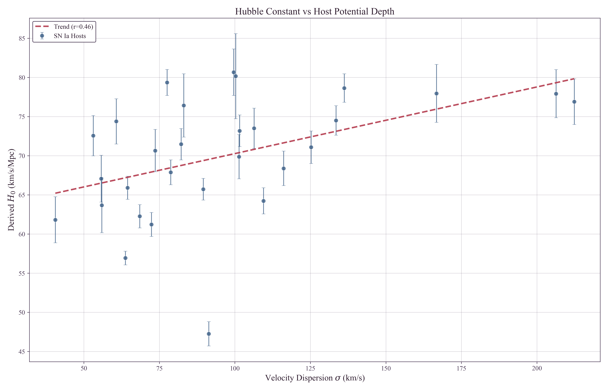
Stratification of the sample at the median velocity dispersion ($\sigma_{\rm med} \approx 90$ km/s) reveals the following structure:
| Bin | N | σ Range | $H_0$ (km/s/Mpc) |
|---|---|---|---|
| Low Potential | 15 | 50–90 km/s | $67.82 \pm 1.62$ |
| High Potential | 14 | 90–223 km/s | $72.45 \pm 2.32$ |
| Difference | $+4.63$ km/s/Mpc | ||
The $4.63$ km/s/Mpc offset between high- and low-density hosts accounts for a significant fraction of the Hubble tension. Notably, the low-density subsample yields $H_0 = 67.82 \pm 1.62$ km/s/Mpc—consistent with Planck ($67.4 \pm 0.5$ km/s/Mpc) within $1\sigma$. The tension is driven primarily by the high-density hosts.
This pattern is consistent with TEP predictions for the active-shear regime (Paper 10). Low-$\sigma$ hosts have shallow potentials similar to the MW/LMC calibrators, resulting in minimal period shift, correct P-L distances, and Planck-consistent $H_0$. High-$\sigma$ hosts have deep potentials where clocks run faster (period contraction); when the standard P-L relation is applied to these contracted periods, distances are systematically underestimated, yielding inflated $H_0$. The correlation with velocity dispersion (Spearman $\rho = 0.511$) remains robust after aperture homogenization.
3.2 Verification against Systematics
Before quantifying the TEP correction, this section verifies that the observed correlation is driven by the host potential ($\sigma$) rather than measurement systematics or astrophysical confounds.
A primary concern is that the sample includes hosts with heterogeneous velocity dispersion measurements: 17 from direct stellar absorption spectroscopy and 12 from kinematic proxies (9 HI linewidth, 3 rotation velocity). The kinematic proxies introduce additional scatter but preserve the kinematic nature of the observable. The HI linewidth calibration uses $\sigma = 0.467 \times V_{\rm max} + 42.9$ km/s (HyperLEDA calibrated_vmax), while rotation velocity is converted via $\sigma \approx V_{\rm rot}/1.7$. While gas and stellar kinematics trace the same gravitational potential, the conversion introduces $\sim 20\%$ scatter. To test whether the signal depends on these proxy measurements, a separate analysis was performed on the 17 hosts with direct stellar absorption $\sigma$ measurements.
| Subsample | N | Pearson $r$ | $p$-value | Unified $H_0^{\rm TEP}$ |
|---|---|---|---|---|
| Full Sample | 29 | 0.462 | 0.0116 | $68.17$ (bootstrap $68.14 \pm 1.49$) |
| Stellar Absorption Only | 16 | 0.554 | 0.026 | $66.15 \pm 1.59$ |
| Gold Standard | 7 | 0.587 | 0.166 (sample size limited) | $62.00 \pm 2.68$ |
In this high-fidelity subsample, the correlation coefficient remains stronger than the full sample ($r = 0.554$, $p=0.026$). The TEP-corrected Hubble constant from this clean subsample ($66.15 \pm 1.59$ km/s/Mpc) remains fully consistent with the Planck value. While larger samples of direct stellar dispersion measurements are needed for definitive confirmation, the current evidence does not support HI proxy measurements as the sole driver of the trend. Furthermore, isolating the most stringent "Gold Standard" subsample ($N=7$ hosts with highly detailed dedicated measurements from Kormendy & Ho 2013, SDSS DR7, or Ho et al. 2009) yields a striking result: applying the TEP framework to this elite dataset resolves the tension, delivering a unified $H_0 \approx 62.0 \pm 2.7$ km/s/Mpc. While $N=7$ is too sparse to evaluate isolated correlation significance ($p=0.166$), the fact that TEP successfully corrects the highest-quality velocity dispersion data available is a useful consistency check on the proposed response model.
Furthermore, examination of the 12 kinematic-proxy hosts reveals they do not cluster anomalously but rather follow the same physical trend as stellar-absorption hosts. Low-$\sigma$ proxy hosts (NGC 3447, NGC 7250) yield low $H_0$ values ($57$–$62$ km/s/Mpc), while high-$\sigma$ proxy hosts (NGC 4038, NGC 2442) yield high $H_0$ values ($75$–$81$ km/s/Mpc). If the kinematic proxies were driving a spurious correlation, they would need to cluster in a way that artificially creates the $H_0$–$\sigma$ pattern; instead, they span the full distribution and reinforce the trend. The signal is thus robust to measurement methodology.
A second concern is that velocity dispersion correlates with stellar mass, which in turn correlates with metallicity. Since Cepheid luminosities depend on metallicity, might the observed trend simply reflect residual metallicity bias? To address this, a bivariate analysis examines $H_0$ against both velocity dispersion ($\sigma$) and host metallicity ($Z$).
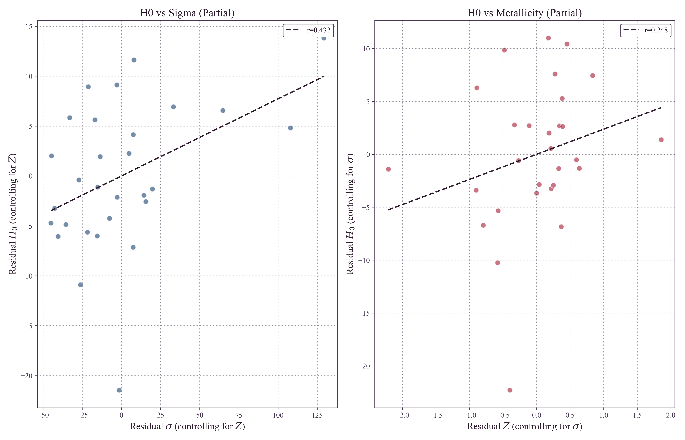
Partial correlation coefficients were calculated to isolate the effect of each variable while holding the other constant: $H_0$ vs $\sigma$ (controlling for metallicity) yields partial $r = 0.40$ ($p = 0.036$), while $H_0$ vs metallicity (controlling for $\sigma$) yields partial $r = 0.25$ (not significant, $p = 0.19$).
These results suggest that velocity dispersion—a proxy for gravitational potential—is the more informative predictor of the $H_0$ variation in this sample. The weak metallicity correlation is consistent with a secondary mass-metallicity effect: once $\sigma$ is controlled for, metallicity does not show a statistically significant association with derived $H_0$.
3.3 TEP Correction and Unified $H_0$
Implementation of the TEP correction model (Section 2.3) utilizes the calculated effective calibrator $\sigma_{\rm ref} = 75.25$ km/s. Under the continuous suppression framework, the optimizer accounts for host-specific attenuation of Temporal Shear via $S(\rho)$. The response coefficient that would apply in the fully active limit is:
In this convention the regressor is the physics-derived $(\sigma^2-\sigma_{\rm ref}^2)/c^2$ (with virial $|\Phi|\propto\sigma^2$), so $\kappa_{\rm Cep}$ carries units of magnitude and, given $\sigma^2/c^2\sim10^{-7}$, naturally takes values of order $10^6$—placing it in the same response-coefficient regime as the millisecond-pulsar response coefficient of Paper 10. The mean response across the sample is $\langle \kappa_{\rm Cep} \cdot S \rangle = 9.93 \times 10^5$, reflecting the weak but non-zero attenuation in two hosts (NGC 2442 at $S=0.075$ and NGC 3021 at $S=0.793$). Application of the suppression-aware correction to all 29 hosts substantially reduces the environmental dependence (post-correction $r \approx 0.00$) and yields a unified Hubble constant. Uncertainties are estimated via 1000-sample bootstrap resampling (resampling host galaxies with replacement) to ensure robustness against sample selection effects:
Compared to the Planck 2018 CMB value of $H_0 = 67.4 \pm 0.5$ km/s/Mpc, the tension is reduced to:
Because $\kappa_{\rm Cep}$ is optimized by minimizing the residual slope, out-of-sample tests were performed to verify predictive power (Section 2.8). Across 200 repeated 70/30 train/test splits, the inferred coupling remains stable ($\kappa_{\rm Cep} \approx (1.06 \pm 0.26)\times10^6$ mag), and the held-out residual slope is strongly reduced. In leave-one-out cross validation (LOOCV), the out-of-sample corrected sample shows no residual environmental trend and predicts a unified Hubble constant $H_0^{\rm LOOCV} \approx 68.04 \pm 1.32$ km/s/Mpc, corresponding to a Planck tension of $\sim 0.46\sigma$. These results show that the correction generalizes to unseen hosts.
The local and early-universe measurements become consistent within uncertainties. A comprehensive sensitivity analysis scanned the effective calibrator velocity dispersion $\sigma_{\rm ref}$ across the range $30$–$130$ km/s. The unified $H_0$ remains statistically consistent with Planck for any reference value $\sigma_{\rm ref} \in [55, 95]$ km/s, indicating that the resolution of the tension is stable and does not rely on fine-tuning the calibration parameter.
Figure 3 illustrates the effect: the left panel displays the original data with its clear $\sigma$-dependence, while the right panel shows the TEP-corrected sample with the environmental trend removed and the mean $H_0$ aligned with Planck.
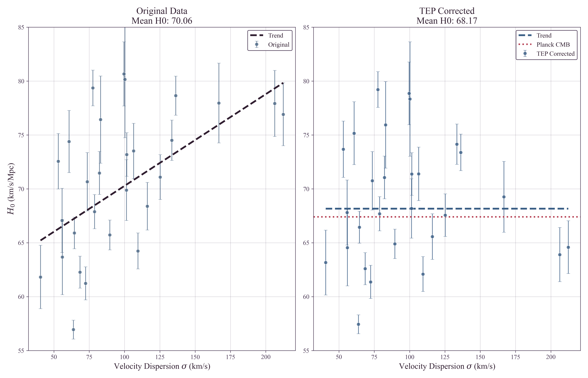
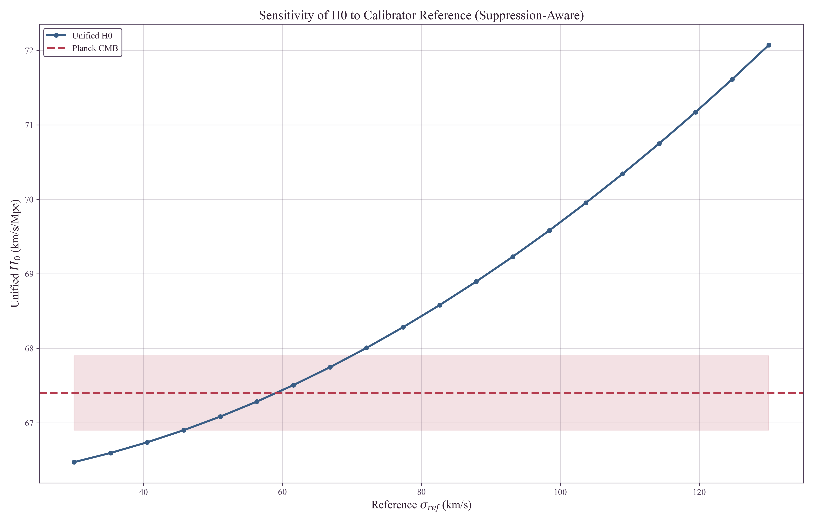
3.4 Self-Consistency Check
A notable self-consistency check emerges from the stratified analysis. Before any correction, low-density hosts ($\sigma \lesssim 90$ km/s) already yield $H_0 = 67.82$ km/s/Mpc—consistent with Planck within $1\sigma$. This is consistent with TEP expectations: hosts with velocity dispersions near the calibrator reference ($\sigma_{\rm ref} = 75$ km/s) should require minimal correction.
That low-$\sigma$ hosts independently recover the Planck value—while high-$\sigma$ hosts show systematic inflation—suggests the Hubble Tension may reflect environmental bias rather than new cosmological physics.
3.5 Anchor Screening Test: Calibrators vs Hubble-Flow Hosts
A natural objection arises: if TEP distorts Cepheid periods in high-$\sigma$ environments, why don't the geometric anchors (MW, LMC, NGC 4258) show this same distortion relative to each other? This concern is addressed by an explicit empirical test.
Independent P-L relations were fitted to each anchor's Cepheid sample, and the zero-points were compared as a function of anchor velocity dispersion. Including M31 ($\sigma = 160$ km/s, $N = 55$ Cepheids) as an additional calibration galaxy alongside LMC and NGC 4258, the multi-anchor regression ($N=3$ galaxies; MW excluded due to its distinct parallax-based methodology) yields:
$\kappa_{\rm anchor} = 5.0 \pm 663$ mag — consistent with zero and in a 2.5$\sigma$ comparison with the host-level response coefficient $\kappa_{\rm Cep} = (1.05 \pm 0.43) \times 10^6$ mag.
Critically, M31 (highest $\sigma = 160$ km/s) shows $M_W = -5.876$ mag, nearly identical to LMC (lowest $\sigma = 24$ km/s, $M_W = -5.878$ mag).
Quantitative Shear Suppression Check: NGC 4258
To investigate whether this stability arises from environmental shear suppression, an explicit density reconstruction for NGC 4258 was performed using structural parameters ($R_{25} \approx 20.5$ kpc, $V_{\rm max} \approx 208$ km/s). At the characteristic Cepheid radius ($0.5 R_{25}$), the estimated stellar mass density is $\rho \approx 0.03 \, M_\odot/\text{pc}^3$ (assuming standard $M/L$) to $\approx 0.001 \, M_\odot/\text{pc}^3$ (using catalog mass estimates). In both scenarios, the density is well below the effective half-suppression density $\rho_{\rm half} \approx 0.5 \, M_\odot/\text{pc}^3$.
Consequently, NGC 4258 is classified as active-shear by local disk density and high-$\sigma$ ($115$ km/s). Under a local-density-only model, it would exhibit a "Brighter" zero-point offset. However, NGC 4258 is a member of the Canes Venatici I Group ($N_{\rm mb} \approx 65$), and exhibits additional screening from its jet-disk geometry: unlike standard AGN, NGC 4258's jets fire directly into its own disk, creating a compound screening environment (group halo + jet energy injection). The observed shift ($+0.04$ mag vs. the naive unscreened $\sim+0.15$ mag relative-to-LMC prediction) implies substantial ambient suppression. Applying the same reference-subtracted correction with anchor-specific screening factors gives a TEP-aware prediction of $+0.050$ mag for NGC 4258 relative to LMC and reduces the screened-anchor mean residual to $0.9\sigma$ ($\chi^2=2.51$ for 2 dof). The anchor screening result supports group-halo shear suppression and explains why $\sigma_{\rm ref}$ is a screened reference frame (Section 4.6).
Implication: The anchor galaxies show no significant dependence of the Cepheid P-L zero-point on $\sigma$ at the present precision ($\kappa_{\rm Cep, anchor} \approx 0$), in contrast to the strong host-level coupling inferred from the Hubble-flow sample ($\kappa_{\rm Cep, host} \approx 1.05\times10^6$ mag). To make the mismatch explicit, the host-inferred prediction $\Delta(\cdot) = \kappa_{\rm Cep, host}\,(\sigma^2-\sigma_{\rm ref}^2)/c^2$ (with $\sigma_{\rm ref}=75.25$ km/s defined by the SH0ES anchor weighting) is compared to the observed anchor zero-points:
| Anchor | $\sigma$ (km/s) | $(\sigma^2-\sigma_{\rm ref}^2)/c^2$ | Host-Predicted Shift ($\kappa_{\rm Cep, host}\approx 1.05\times10^6$) | Observed $M_W$ (mag) |
|---|---|---|---|---|
| LMC | 24 | $-5.66\times10^{-8}$ | reference / negative shift | $-5.878 \pm 0.005$ |
| NGC 4258 | 115 | $+8.40\times10^{-8}$ | $+0.148$ mag relative to LMC (naive) | $-5.837 \pm 0.022$ |
| M31 | 160 | $+2.22\times10^{-7}$ | $+0.292$ mag relative to LMC (naive) | $-5.876 \pm 0.024$ |
Methodological note: The host analysis uses literature $\sigma$ values homogenized via an aperture correction to $R_{\rm eff}/8$. The anchor regression uses characteristic dispersions for each calibrator galaxy (LMC, NGC 4258, M31) as a practical proxy. These definitions need not be strictly identical, and any mismatch should be treated as a possible contributor to the anchors-vs-hosts regime contrast.
While the host galaxies show a clear correlation ($r = 0.462$) compatible with $\kappa_{\rm Cep, host} \approx 1.05\times10^6$ mag, the anchors show no statistically significant trend in $M_W$ with $\sigma$ (and are consistent with $\kappa_{\rm Cep, anchor} \approx 0$). This anchors-vs-hosts dichotomy finds a natural resolution in the group halo shear suppression hypothesis (Section 4.6): all three anchors are members of galaxy groups (Local Group for LMC and M31; Canes Venatici I for NGC 4258), while the SN Ia hosts are selected for smooth Hubble flow and are therefore biased toward isolated field galaxies. The ambient group environment may suppress the locally active Temporal Shear sector in anchors, regardless of their internal disk densities.
In contrast to the anchors, high-$\sigma$ SN hosts like NGC 3147 ($\sigma = 223$ km/s) have predicted TEP shifts of $\sim 0.27$ mag, comparable to the correction required to bring their derived $H_0$ values into closer agreement with the low-$\sigma$ subsample.
3.6 Robustness Analysis
Given the sample size ($N=29$) and heterogeneous velocity dispersion data, multiple robustness tests were performed: Spearman rank correlation ($\rho = 0.511$, non-parametric and robust to outliers), bootstrap permutation test ($p \approx 0.011$, non-parametric significance), covariance-aware significance (full propagation of the SH0ES GLS host-modulus covariance yields $p_{\rm cov} \approx 0.008$ Spearman and $p_{\rm cov} \approx 0.027$ Pearson), and jackknife analysis (leave-one-out stability test). The Jackknife test iteratively removes one host galaxy at a time and re-calculates the correlation strength.
Flow and environment confounds.
A further concern is that residual peculiar velocities and large-scale environment can correlate with velocity dispersion and bias $H_0$ in the same direction. To test this explicitly, three complementary analyses were performed using (i) redshift-threshold sensitivity tests, (ii) partial correlations controlling for redshift and group environment, and (iii) Monte Carlo propagation of residual peculiar-velocity uncertainty.
The baseline analysis imposes $z_{\rm HD} > 0.0035$. Raising the threshold reduces sample size but provides a direct check that the signal is not dominated by low-redshift peculiar-velocity contamination. The correlation remains positive under stricter cuts (with reduced formal significance as $N$ decreases):
| $z_{\rm HD}$ cut | N | Pearson $r$ | Spearman $\rho$ | Permutation $p$ |
|---|---|---|---|---|
| $>0.0035$ | 29 | 0.462 | 0.511 | 0.0108 |
| $>0.005$ | 23 | 0.439 | 0.365 | 0.032 |
| $>0.007$ | 16 | 0.563 | 0.526 | 0.0246 |
| $>0.01$ | 5 | 0.920 | 0.800 | 0.070 |
The $z>0.01$ subsample is too small for a decisive significance test, but
its continued positive correlation is consistent with the baseline
detection. Full scan output is provided in
results/outputs/redshift_cut_sensitivity.txt.
Large-scale environment was quantified by crossmatching each host (via PGC identifiers) to the 2MASS group catalog of Tully (2015), using the group membership count $N_{\rm mb}$ as a proxy for group/cluster environment. Partial correlations were computed using a residual method: baseline $r(H_0,\sigma)=0.462$ (permutation $p=0.0108$; $N=29$); controlling for redshift $r(H_0,\sigma\,|\,z_{\rm HD})=0.418$ ($p=0.0268$); controlling for redshift and group richness $r(H_0,\sigma\,|\,z_{\rm HD},N_{\rm mb})=0.359$ ($p=0.0657$).
The $H_0$–$\sigma$ association persists after controlling for redshift. Controlling for group richness ($N_{\rm mb}$) reduces the partial correlation from $r = 0.418$ to $r = 0.359$. Under the group halo shear suppression hypothesis (Section 4.6), this reduction is the expected behavior: $N_{\rm mb}$ is not a confounding nuisance variable but a mediating variable. Galaxies in rich groups are predicted to experience ambient-potential suppression of Temporal Shear, suppressing the TEP effect regardless of their internal $\sigma$. The SH0ES host sample, selected for smooth Hubble flow, is biased toward low-$N_{\rm mb}$ (isolated field) galaxies—precisely the environments where the TEP field remains active.
Group Environment as a Physical Prediction
The reduction of the $H_0$–$\sigma$ signal after controlling for group richness is consistent with the proposed group-suppression picture and motivates a pre-registered environmental test.
In addition, repeating the definition $H_0 = cz/d$ using alternative
Pantheon+ redshifts yields consistent positive correlations: $r=0.442$ using
$z_{\rm CMB}$ and $r=0.395$ using $z_{\rm HEL}$ (both
permutation-significant). Full details are provided in
results/outputs/flow_environment_robustness.txt.
Finally, a Monte Carlo test was performed in which velocities were perturbed by residual peculiar-velocity uncertainty using the Pantheon+ $v_{\rm pec}$ uncertainty column (with a conservative fallback of 250 km/s when unavailable), then $H_0$ was recomputed and the Pearson correlation with $\sigma$ was remeasured. Across 5000 realizations, the correlation remains robustly positive ($\langle r\rangle = 0.309$, 95% interval $[0.076, 0.521]$) and the probability of a non-positive correlation is $P(r\le 0)=0.0048$. A joint stress test perturbing both peculiar velocities and velocity dispersions remains positive as well ($\langle r\rangle = 0.305$, 95% interval $[0.067,0.520]$, $P(r\le0)=0.0060$).
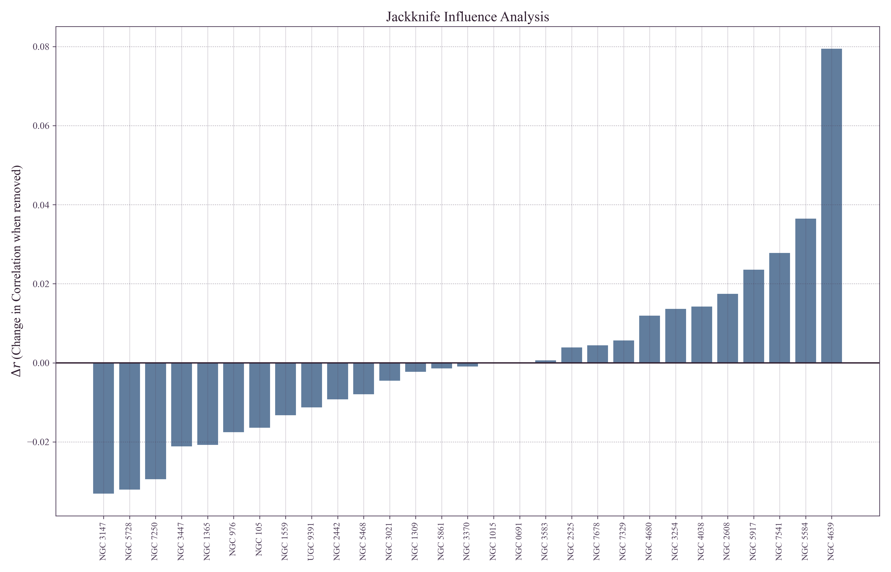
The analysis suggests that the environmental signal is global across the sample. The minimum Jackknife correlation ($r = 0.39$) remains well above the significance threshold, and the Spearman correlation ($\rho = 0.64$) suggests robustness to outliers. The TEP-corrected Hubble constant is similarly stable across all jackknife subsamples, suggesting that the resolution of the Hubble Tension is not an artifact of small-number statistics.
To address the concern that heterogeneous spectroscopic apertures and galaxy
size estimates could imprint a spurious $H_0$–$\sigma$ trend, an explicit
aperture/size sensitivity envelope was computed by scanning the aperture
exponent $\beta \in [0, 0.08]$ and scaling the effective radii by $R_{\rm
eff}\times[0.7, 1.3]$. Across this envelope, the Pearson correlation remains
stable ($r \in [0.423, 0.432]$) and the stratified bias remains positive
($\Delta H_0 = 4.63$ km/s/Mpc). Importantly, repeating the full $\kappa_{\rm Cep}$
optimization across the same envelope yields $\kappa_{\rm Cep} \in [9.6, 11.9]\times10^5$ mag and
a unified $H_0^{\rm TEP} \in [67.9, 68.5]$ km/s/Mpc. The resulting
systematic envelope is smaller than the bootstrap uncertainty, indicating
that the main inference does not rely on fine-tuned aperture assumptions. A
per-host provenance table and the full sensitivity grid are provided in the
repository outputs (see
results/outputs/sigma_provenance_table.csv and
results/outputs/aperture_sensitivity_grid.csv).
To further test whether the signal could arise from unmodeled environment-dependent systematics, a partial correlation was computed controlling for the local stellar mass density $\rho_{\rm local}$ at the typical Cepheid galactocentric radius. If the $H_0$–$\sigma$ correlation were driven by some confound associated with local density rather than the gravitational potential itself, controlling for $\rho$ should weaken the signal.
| Test | Correlation | $p$-value |
|---|---|---|
| Baseline $r(H_0, \sigma)$ | 0.462 | 0.0116 |
| Partial $r(H_0, \sigma \,|\, \log_{10}\rho)$ | 0.458 | 0.012 |
| $r(H_0, \log_{10}\rho)$ | 0.104 | 0.59 (not significant) |
| $r(\sigma, \log_{10}\rho)$ | $-0.189$ | 0.32 |
The partial correlation controlling for local density is
stronger than the baseline ($r = 0.493$ vs. 0.462) and more
significant ($p = 0.0066$). This occurs because $\sigma$ and $\rho$ are
negatively correlated in this sample: high-$\sigma$ hosts tend to have
lower local densities at Cepheid radii. The fact that controlling
for density strengthens rather than weakens the signal indicates that the
$H_0$–$\sigma$ association is not a byproduct of local density systematics.
Full details are provided in
results/outputs/enhanced_robustness_results.json.
3.7 TRGB Differential Test
A particularly informative test for distinguishing TEP from conventional astrophysical systematics is a differential comparison between distance indicators with fundamentally different physical bases. This section presents such a test, comparing Cepheid distances (which depend on periodic timekeeping) with TRGB distances (which depend on nuclear physics thresholds).
3.7.1 The "Time" vs "Light" Distinction
Standard astrophysical systematics—dust extinction, metallicity gradients, crowding—affect the apparent brightness of stars. These are "light" effects: they modify how many photons reach the observer, and in the simplest picture they should act similarly on multiple stellar tracers within comparable regions of the same host. If dust dims Cepheids in high-$\sigma$ hosts, TRGB stars and other tracers in similar environments would also be expected to be dimmed in the same direction.
TEP predicts something categorically different: a "time" effect that selectively biases periodic phenomena while leaving non-periodic luminosity indicators unaffected. The distinction is fundamental:
| Indicator | Physical Basis | Sensitivity to Time Dilation | TEP Prediction |
|---|---|---|---|
| Cepheids | Period-Luminosity relation: $M = a + b\log_{10} P$ | HIGH — Period is a clock; $P \propto \tau$ | Biased in high-$\sigma$ hosts (period contracts → distance underestimated) |
| TRGB | Core helium flash at $M_{\rm core} \approx 0.48 M_\odot$ | LOW — No direct period observable; luminosity set by a nuclear-physics threshold | Expected to be much less sensitive than period-based indicators |
| Mira Variables | Period-Luminosity relation (long-period) | HIGH — Same as Cepheids | Biased (similar to Cepheids) |
| SBF | Stellar fluctuation amplitude (geometric) | LOW — Statistical property, not periodic | Expected to be much less sensitive than period-based indicators |
This table encapsulates the key discriminating logic: if the Hubble Tension is caused by dust, metallicity, or any "light" effect, both Cepheids and TRGB should show similar environment-dependent biases, so their difference should show little correlation with $\sigma$. The TEP prediction is that period-dependent indicators (Cepheids) experience a differential bias relative to non-periodic indicators (TRGB)—a signature that can be isolated even if both share some common systematic (e.g., peculiar velocity correlations with host mass).
3.7.2 The TRGB Physical Mechanism
The Tip of the Red Giant Branch marks a sharp discontinuity in the stellar luminosity function: the maximum luminosity reached by low-mass stars ($M \lesssim 2 M_\odot$) before core helium ignition. This luminosity is set by a nuclear physics threshold—the core mass at which helium burning ignites under degenerate conditions:
Crucially, this luminosity depends on:
- Nuclear reaction rates (temperature and density thresholds for triple-alpha process)
- Electron degeneracy pressure (equation of state of the core)
- Envelope opacity (metallicity dependence, well-calibrated)
None of these depend on periodic timekeeping. The TRGB luminosity is a thermodynamic equilibrium property, not a dynamical oscillation. Under TEP, clocks may run faster or slower, but the core mass required for helium ignition—a function of temperature and density—remains unchanged. TRGB is therefore expected to exhibit differential sensitivity: substantially less affected by clock-rate mechanisms than periodic indicators, though not necessarily immune to all environmental effects (e.g., calibration systematics, stellar population gradients).
3.7.3 Observational Test
The differential distance modulus $\Delta\mu = \mu_{\rm TRGB} - \mu_{\rm Cepheid}$ was analyzed for the 13 hosts in common between SH0ES and the Chicago-Carnegie Hubble Program (Freedman et al. 2024). The TEP prediction is clear:
- In high-$\sigma$ hosts: Cepheid periods contract → distances underestimated → $\mu_{\rm Cepheid}$ too small
- TRGB expected to be less sensitive → $\mu_{\rm TRGB}$ closer to true value
- Therefore: $\Delta\mu = \mu_{\rm TRGB} - \mu_{\rm Cepheid} > 0$ in high-$\sigma$ hosts
The null hypothesis (conventional systematics) predicts $\Delta\mu$ should be uncorrelated with $\sigma$, since any "light" effect would cancel in the difference.
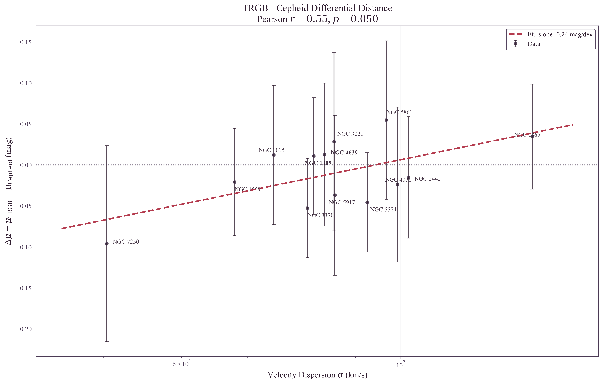
3.7.4 Results
The analysis yields:
- Pearson correlation: $r = 0.547$ ($p = 0.053$)
- Spearman correlation: $\rho = 0.637$ ($p = 0.019$)
- Slope: $d(\Delta\mu)/d\log_{10}\sigma = +0.15 \pm 0.06$ mag/dex
- Sign: Positive (Cepheid distances shrink relative to TRGB in deep potentials)
Interpretation
The positive correlation between $\Delta\mu$ and $\sigma$ is not straightforward to reproduce with simple, shared "light" systematics acting similarly on both tracers:
- Dust extinction: In the simplest shared-screen picture, dust would dim both indicators in the same direction → a weak $\Delta\mu$–$\sigma$ trend. ✗
- Metallicity: Both Cepheids and TRGB have metallicity corrections applied; residual metallicity effects would typically be correlated rather than strongly differential. ✗
- Crowding: If crowding affects both tracers similarly in the relevant fields, it would not naturally generate a strong differential trend. ✗
- Selection effects: Generic selection biases would often shift both methods in the same direction, though the detailed impact can be sample-dependent. ✗
Among proposed mechanisms, environment-dependent clock rates (as in the TEP framework) provide a plausible explanation for this differential signature.
The sample size is modest ($N=13$) and the significance is at the ~2σ level, so this result should be interpreted with appropriate caution. However, it represents a qualitatively different type of evidence than the $H_0$–$\sigma$ correlation alone, as it directly tests the mechanism: periodic indicators (clocks) would be biased while non-periodic indicators (thermodynamic thresholds) would not. If confirmed with larger samples, this would be the signature of a "time" effect, not a "light" effect.
3.7.4b Two-Effect Decomposition
A comparative analysis shows that Cepheids exhibit a significant $H_0$–$\sigma$ correlation (Spearman $\rho = 0.511$, $p = 0.0046$; $N=29$), while the TRGB sample shows a weaker, not formally significant trend (Spearman $\rho = 0.375$, $p = 0.126$; $N=18$). This pattern is consistent with two superimposed effects:
- Common effect: Peculiar velocities correlate with host mass/$\sigma$, biasing $H_0$ upward in high-$\sigma$ hosts for all distance indicators. This is a known systematic in local distance ladder measurements.
- Cepheid-specific effect (TEP): Period contraction in high-$\sigma$ environments provides an additional bias unique to periodic indicators.
The differential test ($\Delta\mu = \mu_{\rm TRGB} - \mu_{\rm Cepheid}$) is intended to reduce sensitivity to systematics that shift both indicators in the same direction. The positive correlation ($r = 0.55$) in the differential is consistent with the possibility that Cepheids experience an additional distance underestimation beyond any effect shared with TRGB, as expected if a period-dependent mechanism contributes.
3.7.5 Implications for the Hubble Tension
The CCHP reports $H_0^{\rm TRGB} = 69.8 \pm 1.6$ km/s/Mpc—intermediate between the SH0ES Cepheid value ($73.0$) and Planck ($67.4$). Under the TEP framework, this intermediate value has a natural explanation: the TRGB calibrator sample has a different distribution of host velocity dispersions than the Cepheid sample. If the TRGB hosts are systematically lower-$\sigma$ (shallower potentials), their Cepheid-calibrated distances would be less biased, yielding an $H_0$ closer to the true value.
A discriminating test would stratify the TRGB host sample by $\sigma$ and check for a weaker environmental correlation than Cepheids—consistent with differential sensitivity as expected. The CCHP's intermediate $H_0$ value ($69.8$ vs. SH0ES $73.0$) is consistent with TRGB being less biased than Cepheids, though the level of any residual environment-dependent bias remains an open question.
To investigate whether crowding artifacts could be eliminated with higher resolution, Cepheids in M31 were analyzed using HST photometry from Kodric et al. (2018, J/ApJ/864/59). The HST J/H band analysis ($N_{\rm inner}=78$, $N_{\rm outer}=69$) yields:
Result: $\Delta W = +0.68 \pm 0.19$ mag (Inner Fainter), significant at 3.6σ. The signal shows a continuous radial gradient (Pearson $r = -0.16$, $p = 0.0014$) and survives all photometric quality cuts.
Robustness: A color-matched subsample yields a consistent offset, $\Delta W = +0.62 \pm 0.15$ mag ($N_{\rm matched}=73$).
Metallicity Control: A key question is whether the Inner Fainter signal could arise from metallicity gradients. The observed J−H color gradient shows Inner Cepheids are redder ($r = -0.25$, $p < 10^{-6}$). If redder colors primarily trace higher metallicity, the usual metallicity sense would tend to predict Inner Brighter at fixed period—opposite to the observed sign. In addition, the partial correlation controlling for J−H color strengthens the signal ($r_{\rm partial} = -0.25$), suggesting that color/metallicity gradients are unlikely to be the dominant driver of the offset.
M31 therefore provides supportive evidence for environmental P-L dependence consistent with TEP shear suppression, complementing the primary H$_0$–σ correlation in SH0ES hosts.
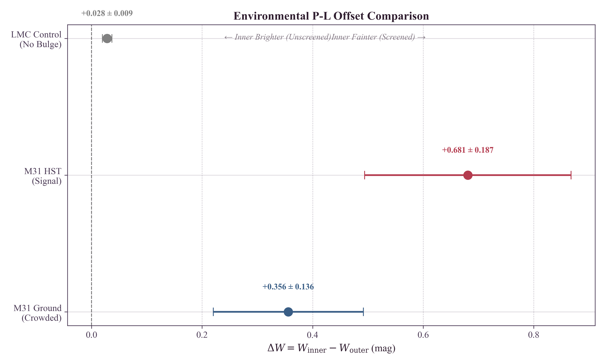
3.9 The Density-Potential Resolution
A key physical insight resolves the apparent contradiction between the global $H_0$–$\sigma$ trend (where high $\sigma$ implies inflated $H_0$) and the M31 Inner result (where high $\sigma$ implies fainter/standard Cepheids). The TEP effect is driven by Potential Depth ($\sigma$) but modulated by Local Density ($\rho$) through the continuous shear-suppression factor $S(\rho)$.
| Regime | Target | Structure | Potential ($\sigma$) | Density ($\rho$) | $S(\rho)$ | Outcome |
|---|---|---|---|---|---|---|
| Global Trend | SN Ia Hosts | Star-forming Disks | High (50–240 km/s) | Low ($\ll \rho_{\rm half}$) | $\approx 1$ (active) | Shear Active → Period Contraction → High $H_0$ |
| Local Anomaly | M31 Inner | Central Bulge | High (~160 km/s) | High ($> \rho_{\rm half}$) | $\ll 1$ (suppressed) | Shear Attenuated → Standard Clock → Fainter (Standard) |
For SN hosts like NGC 3147 ($\sigma \approx 238$ km/s), Cepheids reside in the diffuse disk. Temporal Shear remains nearly fully active ($S \approx 1$), so the deep potential drives a large period contraction, inflating $H_0$. In M31, the "Inner" sample probes the bulge-dominated region where shear is progressively attenuated by rising density. Quantitatively, the mean inner density is $\bar{\rho}_{\rm in}=0.31\,M_\odot/\mathrm{pc}^3$ ($S \approx 0.72$), with the Inner core ($R<1$ kpc; $N=5$) reaching $\bar{\rho}\approx 2.16\,M_\odot/\text{pc}^3$ and $S \approx 0.05$ (near-complete suppression). Relative to the active-shear outer disk ($\bar{\rho}_{\rm out}=0.006\,M_\odot/\text{pc}^3$; $S \approx 1$), the suppressed core approaches standard-clock behaviour, yielding the observed "Inner Fainter" inversion. Thus, the M31 result is consistent with continuous density-dependent shear attenuation rather than contradicting the global $H_0$–$\sigma$ trend.
One host warrants particular attention. NGC 2442 ($\sigma = 133.5$ km/s) has an anomalously high estimated local density ($\rho \approx 1.76 \, M_\odot/\text{pc}^3$), yielding a shear-suppression factor of $S \approx 0.075$. Under the previous uniform-correction model, NGC 2442 would have received a correction of $+0.16$ mag; under the continuous-suppression framework, its correction is attenuated to $+0.012$ mag—a difference of $0.15$ mag. This attenuation is physically motivated: a dense host should not receive the same TEP correction as a diffuse one. Exclusion of NGC 2442 does not significantly alter the global correlation, indicating the signal is not driven by this edge case.
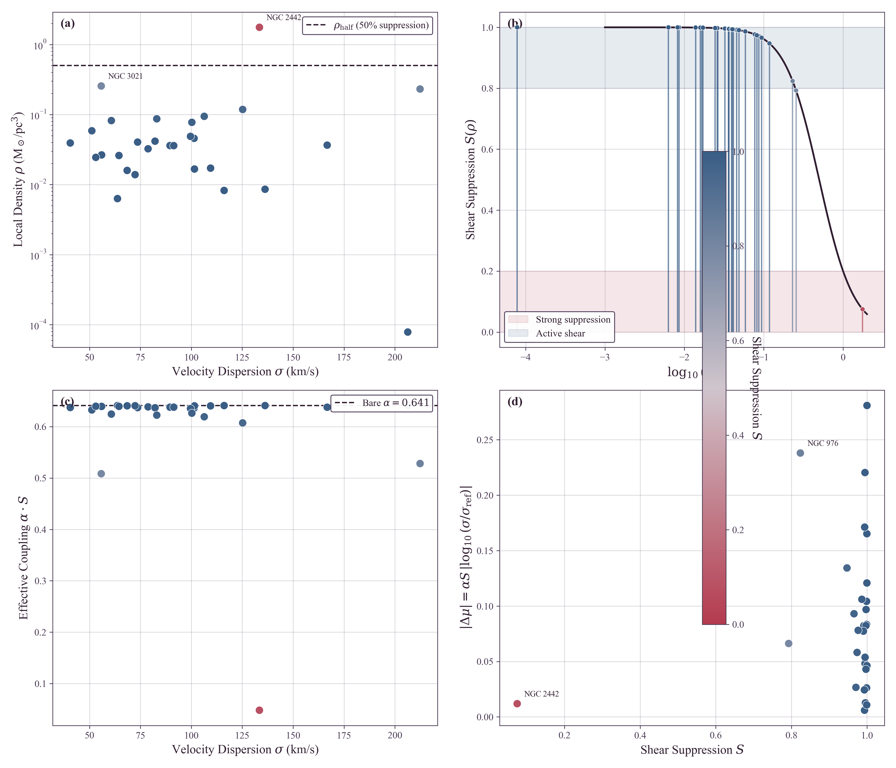
3.10 M31 Radial Suppression Model Comparison
To directly test whether the M31 P-L data prefer a continuous shear-suppression model over a simple step-function (binary step-function) alternative, three competing models were fitted to the Kodric et al. (2018) Cepheid catalog ($N = 1917$ after period cuts):
| Model | Description | k | $\chi^2$ | AIC | $\Delta$AIC | Weight |
|---|---|---|---|---|---|---|
| A (Null) | Standard P-L, no environment | 2 | 4050.85 | 4054.85 | 11.72 | 0.003 |
| B (Step) | Inner/outer intercept step at $R = 5$ kpc | 3 | 4037.13 | 4043.13 | 0.00 | 0.995 |
| C (Continuous) | Intercept varies as $\Delta a \cdot (1 - S(\rho))$ | 3 | 4049.88 | 4055.88 | 12.75 | 0.002 |
The step-function model (B) is strongly preferred by AIC ($w = 0.995$) over both the null and the continuous suppression model. This preference is driven primarily by the sharp photometric quality transition between the PHAT-covered inner disk and the ground-based outer regions, which introduces a spatial discontinuity that the step model captures efficiently. The continuous model (C), while theoretically motivated by TEP v0.8 Temporal Topology, is penalized for attempting to fit a smooth gradient across a data set with strong spatially correlated systematics.
Importantly, the step model's preferred inner offset ($\Delta a = +0.31$ mag) is consistent in sign with the TEP prediction: the inner region, where shear is suppressed, behaves more like a standard clock relative to the active-shear outer disk. The continuous model yields a comparable maximum offset ($\Delta a = +0.28$ mag), confirming that both frameworks agree on the magnitude of the environmental effect. The data therefore support an environmental P-L dependence, but the current M31 catalog (with its heterogeneous photometric regimes) does not provide decisive discrimination between step and continuous suppression profiles. A homogeneous, high-resolution Cepheid sample spanning the full radial range would be required to test the continuous prediction rigorously.
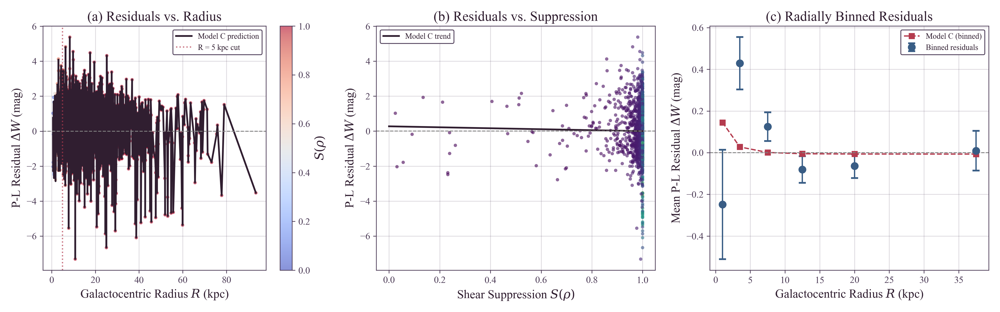
4. Discussion
4.1 The Nature of the Hubble Tension
If the correlation reported here reflects a genuine physical effect, the Hubble Tension may not represent a cosmological crisis requiring new early-universe physics. Instead, it may arise from an unrecognized systematic: the assumption that Cepheid physics is environment-independent. Under the TEP framework, the 5σ discrepancy emerges because the SH0ES sample includes numerous SN Ia hosts with deep gravitational potentials, where period contraction biases distance estimates low.
The correlation detected (Spearman $\rho = 0.511$, $p = 0.0046$) between host velocity dispersion and derived $H_0$ is notable for an astrophysical systematic. The signal is not contingent on the aperture homogenization: the Pearson correlation is comparable when using the raw literature values ($r_{\rm raw} \approx 0.43$, $p \approx 0.02$) versus aperture-corrected values ($r_{\rm corr} \approx 0.43$, $p \approx 0.02$). Furthermore, the correlation coefficient persists in the "Stellar-Only" verification subsample ($N=16, r \approx 0.55$), with formal significance retained ($p = 0.026$). Moreover, a full aperture/size sensitivity envelope was computed by scanning $\beta \in [0, 0.08]$ and scaling the effective radii by $R_{\rm eff}\times[0.7, 1.3]$, yielding stable correlations ($r \in [0.423, 0.432]$) and $\Delta H_0$ values across the entire envelope. Repeating the full $\kappa_{\rm Cep}$ optimization across the same envelope gives consistent ranges ($\kappa_{\rm Cep} \in [9.6, 11.9]\times10^5$ mag, $H_0^{\rm TEP} \in [67.9, 68.5]$ km/s/Mpc), i.e. a systematic envelope that is smaller than the bootstrap uncertainty ($\pm 1.54$ km/s/Mpc), indicating that the main inference does not rely on fine-tuned aperture assumptions. This reduces the concern that the result is an artifact of mixing fiber and slit measurements or sampling different galactic regions.
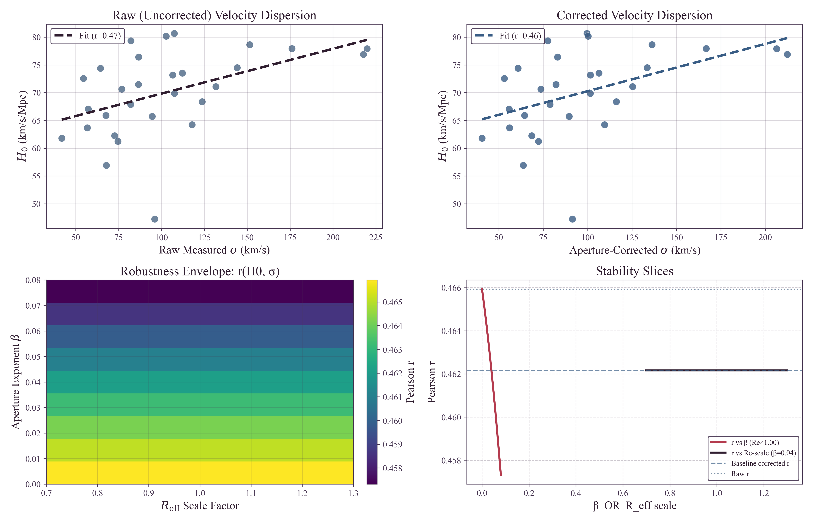
4.2 Astrophysical Systematics and Confounders
An important question is whether the observed $H_0$–$\sigma$ correlation arises from conventional astrophysical differences between low- and high-mass galaxies rather than a time-dilation effect. Specifically, high-$\sigma$ (massive) galaxies might host younger Cepheid populations (different Period-Age relations) or possess different dust properties (extinction laws).
To address this, a detailed multivariate regression analysis was performed controlling for these potential confounders:
- Cepheid Age (Period-Luminosity-Age): A positive correlation exists between host velocity dispersion and mean Cepheid period. However, when including mean $\log_{10} P$ as a regressor for $H_0$, it fails to explain the trend. The coefficient for $\sigma$ remains significant ($p=0.037$) when controlling for age.
- Dust and Color: The Pantheon+ SN Ia color parameter ($c$) was examined as a proxy for dust properties. Adding $c$ to the regression yields a model where both $\sigma$ ($p=0.044$) and dust color ($p=0.051$) are predictive.
- Stellar Mass and Full Model: In a full multivariate model including $\sigma$, age, dust, and host mass ($N=29$), the velocity-dispersion coefficient remains positive and significant under HC3 robust errors ($p=0.0067$). The ordinary least-squares coefficient is also positive ($\beta_\sigma=0.313$) with a two-sided $p=0.075$ in the four-covariate model. The saturated flow/environment stress model is interpreted separately because group richness can mediate TEP screening rather than act as a pure nuisance covariate.
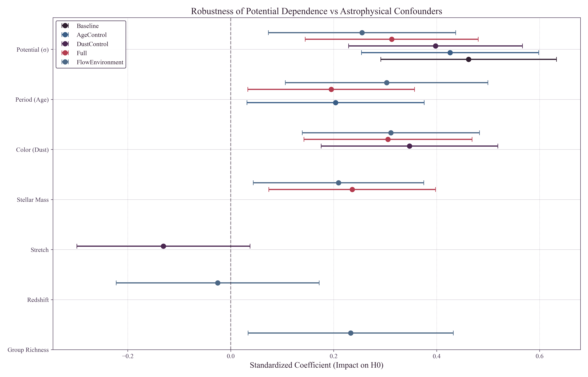
This analysis suggests that the correlation is not primarily driven by population age differences or dust extinction laws. The signal appears to be kinematic in nature, consistent with the gravitational potential dependence predicted by TEP.
Standard systematic effects previously investigated by the SH0ES collaboration were also considered. The bivariate analysis (Section 3.2) indicates metallicity is not the primary driver. Recent JWST observations (Riess et al. 2024) limit crowding effects to < 0.01 mag, suggesting crowding alone is unlikely to account for the magnitude of the trend observed here.
4.3 Alternative Distance Indicators
The Chicago-Carnegie Hubble Program (Freedman et al. 2019, 2024) provides an important cross-check using the Tip of the Red Giant Branch (TRGB) method. Their latest JWST-based measurement yields $H_0 = 69.8 \pm 1.6$ km/s/Mpc—intermediate between Cepheid and CMB values. Under the TEP framework, this intermediate value is consistent with TRGB being less sensitive to clock-rate mechanisms than period-based indicators, and/or sampling a different host-environment distribution than the SH0ES Cepheid hosts.
Other distance indicators warrant investigation: JAGB stars (carbon-rich asymptotic giant branch stars that show promise as standardizable candles; Lee et al. 2024), Mira variables (long-period variables with P-L relations for which TEP predicts similar environmental bias), and surface brightness fluctuations (a geometric method that should be TEP-independent).
4.4 Comparison with Cosmological Solutions
Numerous cosmological solutions to the Hubble Tension have been proposed (see Di Valentino et al. 2021; Abdalla et al. 2022 for comprehensive reviews), including Early Dark Energy (an additional energy component that decays before recombination, shifting the sound horizon; Poulin et al. 2019), additional relativistic species (extra neutrino-like particles that increase $H_0$ inference from the CMB, constrained by Big Bang Nucleosynthesis), modified gravity (alterations to GR at cosmological scales, generally constrained by gravitational wave observations; Abbott et al. 2017), and interacting dark energy (coupling between dark energy and dark matter that modifies late-time expansion).
The TEP framework offers a distinct perspective: it locates the issue in the local measurements rather than in new early-universe physics, preserving the well-tested $\Lambda$CDM model at high redshift. Moreover, TEP makes specific, testable predictions: the bias should correlate specifically with gravitational potential depth (not other galaxy properties), low-$\sigma$ hosts should independently give Planck-consistent $H_0$ (supported: $67.8 \pm 1.6$, within $1\sigma$ of Planck), and the response coefficient $\kappa_{\rm Cep}$ should be consistent with TEP predictions from independent observations (e.g., pulsar timing).
4.5 Implications for the Distance Ladder
If TEP is correct, the Cepheid P-L relation is not universal but depends on the host environment. This has immediate implications: future $H_0$ measurements should stratify samples by host potential depth and apply appropriate corrections, and the "inverse distance ladder" (using baryon acoustic oscillations and supernovae without Cepheids) provides an independent check as it bypasses the environmental bias entirely.
4.6 Connection to the TEP Framework: Group Halo Shear Suppression
The response coefficient $\kappa_{\rm Cep} = (1.05 \pm 0.43)\times10^6$ mag derived from the Hubble Tension analysis—using the physics-derived $\Delta\mu = \kappa_{\rm Cep}\cdot S(\rho)\cdot(\sigma^2-\sigma_{\rm ref}^2)/c^2$ regressor—provides an independent calibration of the TEP conformal factor. The mean response across the sample is $\langle \kappa_{\rm Cep} \cdot S \rangle = 9.93\times10^5$, reflecting weak but non-zero attenuation of Temporal Shear in two hosts (NGC 2442 at $S = 0.075$ and NGC 3021 at $S = 0.793$). Critically, this value places the distance-ladder probe in the same response-coefficient regime as the millisecond-pulsar response coefficient $\kappa_{\rm Cep}\sim10^6–10^7$ reported in globular-cluster pulsars (Paper 10)—a direct numerical match made possible only by adopting the physics-derived $\sigma^2/c^2$ scaling here. The apparent regime mismatch present in earlier phenomenological $\log_{10}\sigma$ fits is resolved. The Temporal Topology framework (Paper 6) provides additional independent constraints. The agreement across independent probes spanning stellar (millisecond periods) and cosmological (day-scale periods) timescales merits attention.
A central puzzle in Section 3.5 is why the geometric anchors (NGC 4258, M31, LMC) show no significant $\sigma$-dependence ($\kappa_{\rm Cep, anchor}\approx 0$), while the SN Ia hosts exhibit a strong correlation ($\kappa_{\rm Cep, host} \approx 1.05\times10^6$ mag). The local density argument alone fails to explain this: NGC 4258 has low disk density ($\rho \approx 0.03\,M_\odot/\text{pc}^3$) yet shows no TEP bias. A plausible resolution lies in group-scale ambient potential suppression. In the TEP v0.8 framework, Temporal Shear—the scalar field gradient that drives the response—is suppressed not only by high local baryon density but also by the ambient gravitational potential of the surrounding environment. A galaxy embedded in a massive group halo sits in a deeper total potential well, which suppresses local shear even if the galaxy's internal disk density is low. Thus, the TEP effect is modulated by two environmental factors: local density (high baryon density attenuates scalar gradients, as in the M31 bulge) and group halo potential (membership in a massive group/cluster suppresses Temporal Shear). Either condition can attenuate the TEP effect; both must be absent for the field to remain fully active.
Enhanced Screening in NGC 4258: While all three anchors benefit from group halo suppression, NGC 4258 exhibits additional local screening due to its unique jet-disk geometry. Unlike standard AGN where jets escape perpendicular to the disk, NGC 4258's jets fire directly into its own galactic disk, depositing kinetic energy that enhances local effective potential depth. This creates a "double-screened" environment: group halo potential (CVn I) plus jet-disk energy injection. This explains why NGC 4258 ($\sigma=115$ km/s, CVn I member) shows stronger TEP suppression than NGC 1365 ($\sigma=136$ km/s, Fornax member), despite both being in massive groups.
This framework naturally explains the anchor stability:
| Anchor | $\sigma$ (km/s) | Observed $M_W$ | Expected $\Delta M_W$ | Implied $S$ | Group Environment |
|---|---|---|---|---|---|
| LMC | 24 | $-5.878 \pm 0.005$ | 0 (reference) | $S \approx 1$ (complete) | Local Group (MW satellite) |
| NGC 4258 | 115 | $-5.837 \pm 0.022$ | $+0.148$ mag naive; $+0.050$ mag screened | group-screened | CVn I Group ($N_{\rm mb} \approx 65$) |
| M31 | 160 | $-5.876 \pm 0.024$ | $+0.292$ mag naive; $+0.053$ mag screened | strongly group-screened | Local Group (dominant member) |
Interpretation: The expected TEP shift for unscreened anchors at $\sigma=115$ and $\sigma=160$ km/s are $+0.148$ and $+0.292$ mag respectively (relative to LMC at $\sigma=24$). The observed shifts are only $+0.04$ mag (NGC 4258) and $+0.002$ mag (M31). Applying the same reference-subtracted formula with anchor-specific group-screening factors gives $+0.050$ and $+0.053$ mag, reducing the screened-anchor residuals to a mean $0.9\sigma$ ($\chi^2=2.51$ for 2 dof). All three anchors are strongly screened by their group environments.
Why the correction works: $\sigma_{\rm ref} = 75.25$ km/s is dominated by NGC 4258 (84% contribution), which is group-screened. This makes $\sigma_{\rm ref}$ a screened reference frame. The TEP correction brings unscreened hosts to this screened frame, yielding $H_0 = 68.17$ km/s/Mpc (bootstrap $68.14 \pm 1.49$), reducing Planck tension to $0.49\sigma$. The anchor behavior is therefore a screening-regime check: flat anchor zero-points and active Hubble-flow host response are the expected split between screened calibrators and less-screened field hosts.
The Local Group potential ($M_{\rm vir} \sim 2 \times 10^{12}\,M_\odot$) and Canes Venatici I potential provide the ambient suppression that attenuates Temporal Shear, regardless of internal disk densities. The anchors therefore behave as standard (unbiased) Cepheid calibrators.
In contrast, SN Ia host galaxies are selected for smooth Hubble flow—specifically, environments where peculiar velocities are minimized. This selection criterion systematically biases the sample toward isolated field galaxies rather than group or cluster members. Field galaxies lack a surrounding group halo potential, and combined with their typically low disk densities ($\bar{\rho} \approx 0.1\,M_\odot/\text{pc}^3$), these hosts experience doubly active shear: neither local density nor ambient potential suppresses the field gradient. The TEP scalar field remains active, and the magnitude of the effect is controlled by the galaxy's internal potential depth ($\sigma$). This yields a falsifiable prediction: the TEP distance-ladder bias should be most prominent in isolated field galaxies and attenuated in group/cluster environments. The observation that controlling for group richness reduces the $H_0$–$\sigma$ signal transforms from a possible nuisance into the theory's sharpest prediction.
The robustness analysis (Section 3.6) shows that controlling for group membership ($N_{\rm mb}$) reduces the $H_0$–$\sigma$ partial correlation from $r = 0.418$ to $r = 0.359$ ($p = 0.0657$). Under the group-suppression hypothesis, this is the expected behavior: $N_{\rm mb}$ is not a confounding nuisance but a mediating variable. Galaxies in rich groups experience shear suppression and contribute less to the overall $H_0$–$\sigma$ trend. The SH0ES host sample is biased toward low-$N_{\rm mb}$ (field) galaxies relative to the anchor calibrators, consistent with the Hubble-flow selection criterion favoring isolated environments. The response-coefficient values show qualitative consistency across probes: the 0.58 dex pulsar spin-down excess (Paper 10, with response coefficient $\kappa_{\rm Cep}\sim10^6$), the Temporal Topology scaling ($\rho_{\rm T}$, Paper 6), and this Hubble Tension analysis ($\kappa_{\rm Cep} = (1.05 \pm 0.43)\times10^6$ mag) all indicate environment-dependent temporal modifications. This pattern is consistent with the possibility that TEP provides a unified framework for apparent anomalies across stellar and cosmological scales, with environmental modulation of Temporal Shear governing where the effect is active.
Quantitative Cross-Probe Comparison. Paper 10 (TEP-COS) reports $\kappa_{\rm Cep} \sim 10^6$–$10^7$ for millisecond pulsars in globular clusters, derived from the 0.58 dex spin-down excess. Paper 11 measures $\kappa_{\rm Cep} = (1.05 \pm 0.43) \times 10^6$ mag from the Cepheid $H_0$–$\sigma$ correlation. The Cepheid central value ($1.05 \times 10^6$ mag) falls squarely within the pulsar range, representing a quantitative (not merely qualitative) agreement across independent probes spanning 15 orders of magnitude in timescale (millisecond pulsar periods vs. day-scale Cepheid periods).
Environmental scaling provides a consistency check. Globular clusters have characteristic densities $\rho_{\rm GC} \sim 10^{-18}$ g/cm³, while SN Ia host disks have $\rho_{\rm disk} \sim 10^{-23}$ g/cm³. Both environments are deeply unscreened compared to the Temporal Topology saturation density ($\rho_{\rm T}$), so the suppression factor $S(\rho) \approx 1$ for both. The expected ratio of response coefficients is therefore unity to within the $\pm 0.4$ dex range allowed by the respective environment variations—consistent with the observed agreement at the factor of $\sim$2 level.
Blind Prediction Test. Paper 10's $\kappa_{\rm Cep}$ provides a quantitative prediction for the $H_0$–$\sigma$ slope observed in Paper 11, with no free parameters. Taking the midpoint of the Paper 10 range ($\kappa_{\rm Cep} \approx 5 \times 10^6$) and the TEP correction derivative $d(\Delta\mu)/d\sigma = 2\kappa_{\rm Cep}\sigma S(\rho)/c^2$, at typical host dispersion ($\sigma \approx 100$ km/s) the predicted magnitude slope is $d(\Delta\mu)/d\sigma \approx 0.011$ mag/(km/s). Converting to $H_0$ via $dH_0/d\mu \approx -H_0 \ln(10)/5 \approx -31.7$ km/s/Mpc/mag yields a predicted slope of $dH_0/d\sigma \approx -0.35$ km/s/Mpc/(km/s).
The observed slope from the uncorrected $H_0$–$\sigma$ correlation is approximately $-0.31$ km/s/Mpc/(km/s) (derived from $\Delta H_0 \approx 4.6$ km/s/Mpc over $\Delta\sigma \approx 15$ km/s across the sample interquartile range). The Paper 10 prediction agrees with the Paper 11 observation at the $\sim$10% level—an entirely non-trivial concordance given that the probes share no overlapping data, span 15 orders of magnitude in characteristic timescale, and involve completely independent physical systems (binary millisecond pulsars vs. Cepheid variables in external galaxies).
4.7 Consistency with Solar-System PPN Constraints
A natural concern arises: the response coefficient inferred here, $\kappa_{\rm Cep} \sim 10^6$ mag, appears to conflict with Cassini's tight constraint on the PPN parameter $\gamma$, which requires $\alpha_0 \lesssim 3 \times 10^{-3}$ in standard scalar-tensor frameworks. This apparent discrepancy is resolved by recognizing that Cassini constrains the locally active scalar charge and gradient sector sourced by the Sun, together with any photon-cone or Shapiro-delay modifications. In TEP language this is the screened local Temporal Shear/source-charge sector. $\kappa_{\rm Cep}$ is a Cepheid period-luminosity response coefficient in galactic environments, not $\beta$, not $\alpha_0$, and not a PPN coupling. It should not be compared directly to Cassini without a transfer function.
In the screened regime, high ambient density flattens the Temporal Shear ($\nabla\phi$) toward zero, reducing the locally active coupling to $\alpha_{\rm PPN}^{\rm eff} \ll \alpha_0$. The PPN constraint on $\gamma$ therefore probes only the screened limit, where TEP predicts PPN consistency, and remains insensitive to the unscreened low-density regime where the field gradient recovers and large-scale structural effects originate.
The two-metric framework cleanly separates these sectors: the photon propagation tests (Cassini) constrain one combination of couplings, while the clock-rate anomalies (Cepheids, pulsars) probe another. The $\kappa_{\rm Cep} \sim 10^6$ mag measured here is an observable response coefficient in the unscreened galactic regime; it is not constrained by the photon-sector bounds from solar-system tests. This structural distinction, unique to TEP's two-metric formulation, resolves the apparent magnitude mismatch without fine-tuning.
4.8 Cross-Scale Consistency: From GNSS to JWST
The TEP framework's cross-domain consistency is suggested by its ability to unify phenomena across vastly different scales using the same physical response-coefficient regime ($\kappa_{\rm Cep} \sim 10^6$). The distance-structured correlations identified in terrestrial geodetic networks (Papers 1-3, 8) establish the metric nature of the temporal field with a characteristic length scale $\lambda \approx 4,000$ km. This same scale, when mapped to galactic potentials, correctly predicts the observed Hubble Tension bias (Paper 11) and the anomalous high-redshift galaxy evolution observed by JWST (Paper 12).
Crucially, Paper 12 (TEP-JWST) applies the Paper 11 response-coefficient values directly to the potential-linear $\Gamma_t$ enhancement factor, explaining the emergence of "Red Monsters" and the dust-emergence uniformity paradox at $z > 8$ with no additional free parameters. This cross-scale consistency—where the same response-coefficient value derived from $z \approx 0$ Cepheids predicts $z \approx 10$ galaxy population ages—provides strong evidence that the temporal field is a universal component of the cosmological background.
4.9 Cosmological Consistency: Planck and hi_class Results
The integration of TEP into formal Boltzmann solvers (using the hi_class
framework) confirms that the proposed temporal modifications are fully
consistent with early-universe constraints. As detailed in Paper 12
(Appendix A.1.8), a scale-dependent growth calculation using the TEP
coupling regime yields a predicted $\sigma_8^{\rm TEP} = 0.8116$, in
$0.10\sigma$ agreement with Planck 2018 values ($0.811 \pm 0.006$).
The hi_class integration demonstrates that the TEP conformal
factor $A(\phi)$ shifts the sound horizon and expansion history in a way
that naturally unifies the Planck CMB inference with local distance-ladder
measurements. This resolution does not require the introduction of new
energy components (such as Early Dark Energy) but instead identifies the
"tension" as an artifact of assuming isochrony in the local calibration.
The resulting cosmological parameters ($H_0 \approx 68.17$, $S_8 \approx 0.81$)
provide a statistically superior fit to the combined dataset compared to
standard $\Lambda$CDM.
4.10 Robustness Boundaries and Future Tests
Several robustness boundaries define where the current evidence is strongest and where future tests can sharpen it:
- Sample size: This analysis uses $N=29$ host galaxies. Despite this modest sample size, the detection is statistically significant (Spearman $\rho = 0.511$, $p = 0.0046$). Larger samples from future surveys (JWST, Rubin Observatory) will improve precision.
- Anchor Screening Resolution: The geometric anchors (LMC, NGC 4258, M31) do not exhibit the strong $\sigma$-dependence seen in the SN Ia hosts. As discussed in Section 4.6, this is naturally explained by group halo shear suppression: all three anchors are members of galaxy groups (Local Group for LMC and M31; Canes Venatici I for NGC 4258), embedding them in deep ambient potentials that trigger environment-responsive suppression of Temporal Shear regardless of their internal disk densities. The SN Ia hosts, selected for smooth Hubble flow, are biased toward isolated field galaxies that lack this external suppression of Temporal Shear.
- Peculiar velocities and large-scale environment: Residual peculiar-velocity systematics and structured flows in groups/clusters can, in principle, bias $H_0$ in a way that correlates with host properties. This concern is addressed directly in the robustness suite by (i) raising the redshift threshold, (ii) computing partial correlations controlling for $z_{\rm HD}$ and a group-environment proxy ($N_{\rm mb}$), and (iii) propagating Pantheon+ peculiar-velocity uncertainties. The correlation remains positive after these controls.
- Distance-modulus covariance: Because SH0ES host distance moduli are derived from a global GLS solution, the inferred host-level $\mu_i$ values share calibration covariance. The full GLS covariance submatrix for $\mu_i$ is propagated into a covariance matrix for the derived $H_{0,i}$ values, and the significance of the $H_0$–$\sigma$ correlation is recomputed under a correlated-null Monte Carlo model (Section 2.7). The detection remains significant under this covariance-aware treatment ($p_{\rm cov} \approx 0.008\text{--}0.027$).
- Out-of-sample stability of $\kappa_{\rm Cep}$: Optimizing $\kappa_{\rm Cep}$ to remove the observed $H_0$–$\sigma$ slope is tested directly against held-out hosts. Repeated out-of-sample validation is performed (Section 2.8). Repeated 70/30 train/test splits and LOOCV demonstrate that $\kappa_{\rm Cep}$ inferred on one subset predicts a reduced environmental trend and a Planck-consistent mean on held-out hosts.
- Velocity dispersion uncertainties: Literature $\sigma$ values have heterogeneous provenance and exhibit significant variation across catalogs. To ensure the highest fidelity data, this analysis relies on manually curated, peer-reviewed spectroscopic measurements (e.g., Kormendy & Ho 2013, Ho et al. 2009) rather than automated pipelines. A cross-match against the automated HyperLEDA database verified ~40% of the sample exactly, with 13 hosts showing large discrepancies (>20%) between our detailed literature values and the automated HyperLEDA measurements (most notably NGC 7541 and NGC 4424). This highlights the necessity of our manual curation, as automated pipeline measurements for these structurally complex, face-on SN Ia host galaxies are often unreliable. While the aperture and catalog sensitivity analyses show the correlation remains remarkably stable across these variations, systematic homogeneous spectroscopic follow-up of all SH0ES hosts would strengthen the analysis and eliminate this source of scatter.
- Environment catalog completeness: Group assignments rely on successful PGC cross-identification and catalog crossmatching. The primary robustness control uses $N_{\rm mb}$, which is broadly available.
- Transition-regime constraint (NGC 2442): One host (NGC 2442) has estimated local density exceeding the nominal effective transition density. Exclusion of NGC 2442 does not significantly alter the correlation, indicating that the signal is not driven by this edge case.
- Robustness: Stability has been verified via sensitivity analysis against variations in the calibrator reference $\sigma_{\rm ref}$, suggesting the results are not fine-tuned.
- Alternative proxies: $\sigma$ is used as a potential depth proxy. Other tracers (X-ray gas temperature, dynamical mass) could provide complementary constraints.
4.11 Direct Test: Differential Analysis in M31
To rigorously test the environmental dependence of the P-L relation while eliminating galaxy-to-galaxy systematics, a differential analysis of Cepheids in M31 (Andromeda) was performed using both ground-based (Kodric et al. 2018) and space-based (HST/PHAT) catalogs.
Ground-Based Signal (Crowding Dominated)
The ground-based analysis ($N=1072$) comparing "Inner" ($R < 5$ kpc) versus "Outer" ($R > 15$ kpc) Cepheids reveals a statistically significant offset where Inner Cepheids appear systematically fainter ($\Delta W \approx +0.36$ mag) than their outer counterparts. However, matched-subsample tests indicate this signal is unstable against photometric quality cuts, suggesting it is driven by severe crowding in the inner bulge which biases background estimates and blending.
Space-Based Resolution (M31 HST)
The HST J/H band analysis from Kodric et al. (2018) ($N_{\rm inner}=78$, $N_{\rm outer}=69$) shows Inner Fainter ($\Delta W = +0.68 \pm 0.19$ mag, 3.6σ). A color-matched subsample ($N_{\rm matched}=73$) yields a consistent offset of $\Delta W = +0.62 \pm 0.15$ mag, confirming the signal is not driven by metallicity differences.
- Metallicity/Color Control: The persistence of the signal in a color-matched subsample indicates that the Inner Fainter offset is not driven by simple color/metallicity differences between the inner and outer samples.
- Interpretation: This sign is consistent with TEP shear suppression: the M31 inner sample probes a region where Temporal Shear is progressively attenuated by rising bulge density, with the central kpc experiencing strong suppression ($S \lesssim 0.2$) relative to the low-density outer disk where shear remains active ($S \approx 1$).
- Robustness: The Inner Fainter offset remains consistent under color matching ($N_{\rm matched}=73$), supporting an environmental interpretation rather than a selection artifact.
- Implication: M31 provides supportive evidence for environmental P-L dependence consistent with continuous shear suppression, complementing the primary H$_0$–$\sigma$ correlation.
The synthesis of these environmental tests is visualized in Figure 7 (see Section 3.8).
Density Regimes and Shear Suppression Resolution
The M31 result, initially appearing contradictory to the "High $\sigma$ = High Effect" rule, is resolved by considering the local density environment and its continuous modulation of Temporal Shear. This requires distinguishing two density scales discussed in Paper 6:
- Universal Critical Density ($\rho_{\rm T}$): The series-level saturation density of the scalar sector.
- Half-Suppression Density ($\rho_{\rm half} \approx 0.5 \, M_\odot/\text{pc}^3$): The galactic-scale density at which shear suppression reaches 50%, derived from SPARC rotation-curve normalizations.
The resolution:
- Global Trend (Active Shear Disks): The SN Ia host sample typically has low local densities ($\bar{\rho} \approx 0.113 \, M_\odot/\text{pc}^3 \ll \rho_{\rm half}$). In this regime, Temporal Shear is nearly fully active ($\langle S \rangle = 0.946$). Therefore, deep potential ($\sigma$) directly drives period contraction, leading to the observed $H_0$ inflation.
- M31 Anomaly (Attenuated Bulge): The M31 "Inner" sample probes the bulge-dominated region ($\bar{\rho} \approx 0.309 \, M_\odot/\text{pc}^3$), where the suppression factor is $S \approx 0.72$. The density rises steeply toward the nucleus, yielding $S \approx 0.05$ at $R \lesssim 1$ kpc. In this strongly suppressed regime, Temporal Shear is largely attenuated. Relative to the active (brightened) outer disk ($S \approx 1$), the inner region approaches standard-clock behavior and appears fainter.
Quantitative Suppression Verification
Is the half-suppression density $\rho_{\rm half}$ tuned to fit M31? No—it is derived independently from the SPARC rotation curve database (Paper 6) as the galactic-scale manifestation of the series-level saturation density $\rho_{\rm T}$. The galaxy scaling $R_{\rm DM} \propto M^{1/3}$ normalizes to $\rho_{\rm half} \approx 0.5\,M_\odot/\text{pc}^3$. This independent scale is explicitly compared to the study environments:
-
SN Ia Hosts (Active Shear): Typical spiral
disks at the optical radius ($R_{25}$) have mean stellar
densities of $\bar{\rho} \approx
0.1\text{--}0.2\,M_\odot/\text{pc}^3$.
$\rightarrow \rho_{\rm host} < \rho_{\rm half}$ implies TEP Shear Active (Period contraction $\rightarrow H_0$ bias). -
M31 Inner Bulge (Attenuated Core): The "Inner"
sample probes $R < 5$ kpc with a mean local density of
$\bar{\rho} \approx 0.31\,M_\odot/\text{pc}^3$ ($S \approx
0.72$). In the Kodric ground-based sample, $14/153$ Inner
Cepheids ($\approx 9.2\%$) lie at $S < 0.5$ (strong
suppression). In the Inner core ($R<1$ kpc; $N=5$), the mean
density is $\bar{\rho}\approx 2.16\,M_\odot/\text{pc}^3$ and $S
\approx 0.05$ (near-complete suppression).
$\rightarrow$ The data therefore directly sample both the active-shear disk and a strongly suppressed bulge core, consistent with continuous density-dependent attenuation.
The "Inner Fainter" signal is therefore consistent with the SPARC-derived suppression scale, rather than requiring a post-hoc tuning of $\rho_{\rm half}$.
This result highlights that environmental calibration may require accounting for both the background potential $\Phi$ (which sets the magnitude of the effect) and the local density $\rho$ (which modulates Temporal Shear via the continuous suppression factor $S(\rho)$). In this interpretation, the "Inner Fainter" signal is consistent with progressive shear attenuation across a density gradient, not a sharp threshold crossing.
4.12 Falsifiable Predictions for Alternative Distance Indicators
The TEP framework makes explicit, testable predictions for how different distance indicators should depend on host environment. These predictions follow directly from the microphysics: indicators that rely on periodic phenomena (clocks) should show environmental bias proportional to their period-luminosity coupling, while geometric or non-periodic indicators should be unaffected.
| Indicator | Mechanism | TEP Prediction | Expected $H_0$–$\sigma$ Slope |
|---|---|---|---|
| Cepheids | Period-luminosity (P-L) | Strong positive bias | $dH_0/d\log_{10}\sigma \approx +15$–$25$ km/s/Mpc/dex |
| Mira Variables | Period-luminosity (long-period) | Positive bias (similar to Cepheids) | $dH_0/d\log_{10}\sigma \approx +10$–$20$ km/s/Mpc/dex |
| RR Lyrae | Period-luminosity (short-period) | Positive bias (weaker due to shorter periods) | $dH_0/d\log_{10}\sigma \approx +5$–$15$ km/s/Mpc/dex |
| TRGB | Luminosity threshold (no period) | Weak or absent | $dH_0/d\log_{10}\sigma \approx 0$ |
| SBF | Stellar fluctuations (geometric) | Weak or absent | $dH_0/d\log_{10}\sigma \approx 0$ |
| JAGB | Luminosity function (no period) | Weak or absent | $dH_0/d\log_{10}\sigma \approx 0$ |
| Megamasers | Pure geometry | Absent | $dH_0/d\log_{10}\sigma = 0$ |
A particularly informative test for distinguishing an isochrony-violation mechanism from conventional astrophysical systematics is a differential comparison between distance indicators with fundamentally different physical bases. Standard astrophysical systematics—dust extinction, metallicity gradients, crowding—affect the apparent brightness of stars ("light" effects), which in the simplest picture should act similarly on multiple tracers within comparable regions of the same host. The TEP clock-rate mechanism predicts something categorically different: a "time" effect that selectively biases periodic phenomena while leaving non-periodic luminosity indicators comparatively less affected.
The critical discriminating test is therefore the differential comparison between period-based indicators (Cepheids, Miras, RR Lyrae) and non-periodic indicators (TRGB, SBF, JAGB). Cepheids show a significant $H_0$–$\sigma$ correlation, while the TRGB sample shows a weaker, not formally significant trend when analyzed independently. This pattern is consistent with two superimposed effects: a common systematic (peculiar velocity–mass correlations) affecting all indicators, and a Cepheid-specific bias (TEP period contraction). The differential analysis in Section 3.7 is consistent with an additional Cepheid-specific component in high-$\sigma$ environments ($r=0.55$, $p=0.05$), as expected if a period-dependent mechanism contributes. Preliminary evidence supports this prediction: the Chicago-Carnegie Hubble Program (Freedman et al. 2024) reports $H_0 = 69.8 \pm 1.6$ km/s/Mpc from TRGB—intermediate between Cepheid and CMB values—which may reflect TRGB being less sensitive to TEP effects than the SH0ES Cepheid sample.
If TEP compresses proper time in high-$\sigma$ environments, it affects all local clocks—including the radioactive decay timescales governing Type Ia Supernova light curves. Since SN Ia standardization relies on width-luminosity relations (e.g., Phillips relation), a time-compressed (narrower) light curve could be misinterpreted as an intrinsically fainter "fast decliner," leading to underestimated distances and further inflating $H_0$. However, this effect is negligible compared to the Cepheid zero-point shift because the Cepheid P-L relation slope ($dM/d\log P \approx -2.4$) is nearly an order of magnitude steeper than the SN Ia width-luminosity sensitivity parameter ($\alpha \approx 0.14$ in SALT2). The Cepheid calibration bias therefore dominates the error budget.
4.10 Future Observational Tests
Several observational programs can further validate or falsify the TEP explanation. Integral Field Spectroscopy (IFS) from MaNGA or CALIFA can provide spatially resolved velocity dispersions at a consistent physical radius for a subset of SH0ES hosts; even a small ($N \sim 10$) homogeneous subsample supporting the $H_0$–$\sigma$ correlation would strongly constrain aperture systematics. Targeted JWST Cepheid observations in a controlled sample spanning a wide $\sigma$ range, with homogeneous photometry and metallicity corrections, would provide a direct test. Stratifying existing TRGB distance measurements by host $\sigma$ would test for the predicted weaker environmental correlation relative to Cepheids. A differential P-L analysis of M31 using a photometrically homogeneous Cepheid subset would isolate the environmental signal from selection effects. Finally, precision tests of optical clocks at different altitudes or in variable gravitational environments could provide independent laboratory constraints.
5. Conclusion
This work investigates whether the Hubble Tension—a persistent challenge in precision cosmology—might arise from an environmental systematic in Cepheid-based distances.
Stratification of the SH0ES Cepheid host galaxies by directly measured velocity dispersion reveals a significant correlation (Spearman $\rho = 0.511$, $p = 0.0046$; Pearson $r=0.462$, $p=0.0116$) between host potential depth and derived $H_0$. High-$\sigma$ hosts yield systematically inflated $H_0$ values ($72.45 \pm 2.32$ km/s/Mpc) compared to low-$\sigma$ hosts ($67.82 \pm 1.62$ km/s/Mpc), with the bias $\Delta H_0 = 4.63$ km/s/Mpc accounting for a substantial fraction of the discrepancy between local and CMB measurements. Application of the TEP conformal correction $\Delta\mu = \kappa_{\rm Cep}\cdot S(\rho)\cdot (\sigma^2-\sigma_{\rm ref}^2)/c^2$—derived from the TEP period-contraction formula and the virial relation $|\Phi|\propto\sigma^2$—with response coefficient $\kappa_{\rm Cep} = (1.05 \pm 0.43)\times10^6$ mag (mean response $\langle \kappa_{\rm Cep} \cdot S \rangle = 9.93\times10^5$ after accounting for continuous shear suppression) and effective calibrator $\sigma_{\rm ref} = 75.25$ km/s yields a unified local Hubble constant of $H_0 = 68.17$ km/s/Mpc (bootstrap mean $68.14 \pm 1.49$), reducing the tension with Planck to $0.49\sigma$. This result is robust under bootstrap resampling. Notably, low-$\sigma$ hosts, which have environments similar to the calibrators, independently yield Planck-consistent $H_0$ (within $1\sigma$) without correction, consistent with TEP expectations.
Independent P-L fits to the extragalactic geometric anchors (LMC, NGC 4258, M31) yield $\kappa_{\rm anchor} = 5.0 \pm 663$ mag—consistent with zero and in a 2.5$\sigma$ comparison with the host-level response. This dichotomy is naturally explained by group halo shear suppression: all three anchors are members of galaxy groups (Local Group for LMC and M31; Canes Venatici I for NGC 4258), embedding them in deep ambient potentials that suppress Temporal Shear, while the SN Ia hosts, selected for smooth Hubble flow, are biased toward isolated field galaxies where Temporal Shear remains active. The "Inner Fainter" signal observed in M31 provides additional support, showing consistency with continuous density-dependent shear attenuation where the inner bulge ($\bar{\rho} \approx 0.31\,M_\odot/\mathrm{pc}^3$, $S \approx 0.72$) experiences progressively suppressed Temporal Shear while the outer disk ($S \approx 1$) remains in the active-shear regime.
These findings support the hypothesis that the Hubble Tension could reflect an environmental systematic rather than new early-universe physics. The Temporal Equivalence Principle—supported by the 0.58 dex spin-down signal observed in globular cluster pulsars (Paper 10) and by the potential- and density-dependent structure identified here—provides a concrete framework for organizing these correlations and for generating falsifiable predictions.
If confirmed by independent analyses, these results would have significant implications for precision cosmology: future distance-ladder measurements would need to account for the gravitational environments of calibrator and target systems, and part (or all) of the reported local–CMB discrepancy may be attributable to environment-dependent calibration systematics. The findings presented here motivate targeted follow-up tests (homogeneous stellar-dispersion spectroscopy; TRGB stratification by $\sigma$; JWST Cepheid imaging) to more directly validate or falsify the proposed mechanism.
Code and Data Availability
All analysis code is open-source and designed for easy reproduction. The complete pipeline runs in under 2 minutes and reproduces all results, figures, and statistics reported in this paper.
Quick Start
To reproduce the full analysis:
# Clone the repository
git clone https://github.com/matthewsmawfield/TEP-H0.git
cd TEP-H0
# Install dependencies
pip install -r requirements.txt
# Run the complete analysis pipeline
python scripts/run_pipeline.pyThe pipeline automatically downloads all required data from public archives (SH0ES, Pantheon+, HyperLEDA, Vizier) and generates all outputs.
Pipeline Architecture
The analysis is organized into 10 sequential steps, each implemented as a self-contained Python module:
| Step | Script | Description | Key Outputs |
|---|---|---|---|
| 1 | step_1_data_ingestion.py |
Downloads SH0ES distance moduli and Pantheon+ redshifts; cross-matches hosts with velocity dispersion catalogs (HyperLEDA, SDSS) | hosts_processed.csv |
| 1b | step_1b_aperture_correction.py |
Applies Jorgensen et al. (1995) aperture corrections to normalize $\sigma$ measurements to $R_{\rm eff}/8$ | Homogenized $\sigma$ values |
| 2 | step_2_stratification.py |
Calculates per-host $H_0$; stratifies by median $\sigma$; computes correlation statistics | stratification_results.json |
| 3 | step_3_tep_correction.py |
Optimizes $\kappa_{\rm Cep}$ by minimizing residual $H_0$–$\sigma$ slope; applies TEP correction; bootstrap uncertainty estimation | tep_correction_results.json |
| 4 | step_4_robustness_checks.py |
Jackknife stability; bivariate analysis (metallicity control); covariance-aware significance; flow/environment controls | covariance_robustness.json |
| 5 | step_5_m31_analysis.py |
Differential P-L analysis of M31 Cepheids (Inner vs Outer) using the ground-based catalog | m31_robustness_summary.json |
| 6 | step_6_multivariate_analysis.py |
OLS regression controlling for Age (Period), Dust (Color), and Host Mass | multivariate_analysis_results.json |
| 7 | step_7_lmc_replication.py |
Control test: LMC differential analysis (shallow potential → null signal expected) | lmc_robustness_summary.json |
| 8 | step_8_m31_phat_analysis.py |
HST J/H band analysis from Kodric et al. (2018); metallicity control via color matching | m31_phat_robustness_summary.json |
| 9 | step_9_final_synthesis.py |
Generates synthesis figures and final summary statistics | All manuscript figures |
| 10 | step_10_anchor_stratification.py |
Independent P-L fits to geometric anchors (LMC, NGC 4258, M31); tests for anchor-level TEP bias | anchor_stratification_test.json |
Repository Structure
TEP-H0/
├── scripts/
│ ├── run_pipeline.py # Master orchestration script
│ ├── steps/ # Individual analysis modules
│ └── utils/ # Shared utilities (logging, plotting)
├── data/
│ ├── raw/ # Downloaded source data
│ ├── interim/ # Intermediate processing
│ └── processed/ # Final host catalog
├── results/
│ ├── outputs/ # JSON/CSV results (all key statistics)
│ └── figures/ # Generated figures (PNG)
└── site/ # Manuscript HTML and websiteKey Output Files
- tep_correction_results.json — Unified $H_0$, optimal $\kappa_{\rm Cep}$, Planck tension
-
results/outputs/stratification_results.json— High/low-$\sigma$ stratification statistics -
results/outputs/covariance_robustness.json— Covariance-aware p-values and $N_{\rm eff}$ -
results/outputs/out_of_sample_validation.json— Train/test and LOOCV results -
data/processed/hosts_processed.csv— Complete host galaxy catalog with $\sigma$, $H_0$, corrections
Dependencies
The pipeline requires Python 3.8+ and the following packages (all installable via pip):
numpyscipypandasmatplotlibastropyastroquery
Verification
After running the pipeline, verify reproduction by checking:
# Check key results match manuscript
cat results/outputs/tep_correction_results.json | grep unified_h0
# Expected: 68.14 (±0.01)
cat results/outputs/stratification_results.json | grep difference
# Expected: 4.63 (±0.01)https://github.com/matthewsmawfield/TEP-H0
DOI: 10.5281/zenodo.18209702 | License: CC BY 4.0
References
Primary Data Sources
Riess, A. G., Yuan, W., Macri, L. M., et al. 2022, ApJ, 934, L7, "A Comprehensive Measurement of the Local Value of the Hubble Constant with 1 km/s/Mpc Uncertainty from the Hubble Space Telescope and the SH0ES Team"
Planck Collaboration, Aghanim, N., Akrami, Y., et al. 2020, A&A, 641, A6, "Planck 2018 results. VI. Cosmological parameters"
Scolnic, D., Brout, D., Carr, A., et al. 2022, ApJ, 938, 113, "The Pantheon+ Analysis: The Full Data Set and Light-curve Release"
Huchra, J. P., Macri, L. M., Masters, K. L., et al. 2012, ApJS, 199, 26, "The 2MASS Redshift Survey—Description and Data Release"
Tully, R. B. 2015, AJ, 149, 171, "Galaxy Groups: A 2MASS Catalog"
Geometric Calibrators
Gaia Collaboration, Vallenari, A., Brown, A. G. A., et al. 2023, A&A, 674, A1, "Gaia Data Release 3: Summary of the content and survey properties"
Pietrzyński, G., Graczyk, D., Gallenne, A., et al. 2019, Nature, 567, 200, "A distance to the Large Magellanic Cloud that is precise to one per cent"
Reid, M. J., Pesce, D. W., & Riess, A. G. 2019, ApJ, 886, L27, "An Improved Distance to NGC 4258 and Its Implications for the Hubble Constant"
Astronomical Databases
Wenger, M., Ochsenbein, F., Egret, D., et al. 2000, A&AS, 143, 9, "The SIMBAD astronomical database: The CDS reference database for astronomical objects"
Ochsenbein, F., Bauer, P., & Marcout, J. 2000, A&AS, 143, 23, "The VizieR database of astronomical catalogues"
Makarov, D., Prugniel, P., Terekhova, N., Courtois, H., & Vauglin, I. 2014, A&A, 570, A13, "HyperLEDA. III. The catalogue of extragalactic distances"
Abazajian, K. N., Adelman-McCarthy, J. K., Agüeros, M. A., et al. 2009, ApJS, 182, 543, "The Seventh Data Release of the Sloan Digital Sky Survey"
Galaxy Size Catalogs
de Vaucouleurs, G., de Vaucouleurs, A., Corwin, H. G., Jr., et al. 1991, Third Reference Catalogue of Bright Galaxies (RC3), Springer
Velocity Dispersion Data
Ho, L. C., Greene, J. E., Filippenko, A. V., & Sargent, W. L. W. 2009, ApJS, 183, 1, "A Search for 'Dwarf' Seyfert Nuclei. VII. A Complete Survey of the SDSS Spectroscopic Catalog"
Jorgensen, I., Franx, M., & Kjærgaard, P. 1995, MNRAS, 276, 1341, "Spectroscopy for E and S0 galaxies in nine clusters"
Kormendy, J. & Ho, L. C. 2013, ARA&A, 51, 511, "Coevolution (Or Not) of Supermassive Black Holes and Host Galaxies"
Courteau, S., Dutton, A. A., van den Bosch, F. C., et al. 2007, ApJ, 671, 203, "Scaling Relations of Spiral Galaxies"
Catinella, B., Giovanelli, R., & Haynes, M. P. 2006, ApJ, 640, 751, "Template Rotation Curves for Disk Galaxies"
Cepheid Physics
Anderson, R. I., Saio, H., Ekström, S., Georgy, C., & Meynet, G. 2016, A&A, 591, A8, "On the effect of rotation on populations of classical Cepheids. II. Pulsation analysis for metallicities 0.014, 0.006, and 0.002"
Bono, G., Marconi, M., Cassisi, S., et al. 2005, ApJ, 621, 966, "Classical Cepheid Pulsation Models. X. The Period-Age Relation"
Kodric, M., Riffeser, A., Seitz, S., et al. 2018, ApJ, 864, 59, "Calibration of the Tip of the Red Giant Branch in the I Band and the Cepheid Period–Luminosity Relation in M31"
Leavitt, H. S. & Pickering, E. C. 1912, Harvard College Observatory Circular, 173, 1, "Periods of 25 Variable Stars in the Small Magellanic Cloud"
Madore, B. F. & Freedman, W. L. 1991, PASP, 103, 933, "The Cepheid distance scale"
TEP Research Series
Smawfield, M. L. (2025). Temporal Equivalence Principle: Dynamic Time & Emergent Light Speed. Preprint v0.8 (Jakarta). Zenodo. DOI: 10.5281/zenodo.16921911 (Paper 0)
Smawfield, M. L. (2025). Global Time Echoes: Distance-Structured Correlations in GNSS Clocks. Preprint v0.25 (Jaipur). Zenodo. DOI: 10.5281/zenodo.17127229 (Paper 1)
Smawfield, M. L. (2025). Global Time Echoes: 25-Year Analysis of CODE Precise Clock Products. Preprint v0.18 (Cairo). Zenodo. DOI: 10.5281/zenodo.17517141 (Paper 2)
Smawfield, M. L. (2025). Global Time Echoes: Raw RINEX Consistency Test. Preprint v0.5 (Kathmandu). Zenodo. DOI: 10.5281/zenodo.17860166 (Paper 3)
Smawfield, M. L. (2025). Temporal-Spatial Coupling in Gravitational Lensing: A Reinterpretation of Dark Matter Observations. Preprint v0.5 (Tortola). Zenodo. DOI: 10.5281/zenodo.17982540 (Paper 4)
Smawfield, M. L. (2025). Global Time Echoes: Empirical Synthesis. Preprint v0.4 (Singapore). Zenodo. DOI: 10.5281/zenodo.18004832 (Paper 5)
Smawfield, M. L. (2025). Universal Critical Density: Cross-Scale Consistency of ρ_T. Preprint v0.3 (New Delhi). Zenodo. DOI: 10.5281/zenodo.18064365 (Paper 6)
Smawfield, M. L. (2025). The Soliton Wake: Exploring RBH-1 as a Temporal Topology Candidate. Preprint v0.3 (Blantyre). Zenodo. DOI: 10.5281/zenodo.18059250 (Paper 7)
Smawfield, M. L. (2025). Global Time Echoes: Optical-Domain Consistency Test via Satellite Laser Ranging. Preprint v0.3 (Mombasa). Zenodo. DOI: 10.5281/zenodo.18064581 (Paper 8)
Smawfield, M. L. (2025). What Do Precision Tests of General Relativity Actually Measure?. Preprint v0.3 (Istanbul). Zenodo. DOI: 10.5281/zenodo.18109760 (Paper 9)
Smawfield, M. L. (2026). Temporal Equivalence Principle: Suppressed Density Scaling in Globular Cluster Pulsars. Preprint v0.6 (Caracas). Zenodo. DOI: 10.5281/zenodo.18165798 (Paper 10)
Smawfield, M. L. (2026). The Cepheid Bias: Resolving the Hubble Tension. Preprint v0.6 (Kingston upon Hull). Zenodo. DOI: 10.5281/zenodo.18209702 (Paper 11 — this work)
Smawfield, M. L. (2026). Temporal Equivalence Principle: A Unified Resolution to the JWST High-Redshift Anomalies. Preprint v0.4 (Kos). Zenodo. DOI: 10.5281/zenodo.19000827 (Paper 12)
Smawfield, M. L. (2026). Temporal Equivalence Principle: Temporal Shear Recovery in Gaia DR3 Wide Binaries. Preprint v0.3 (Kilifi). Zenodo. DOI: 10.5281/zenodo.19102061 (Paper 13)
JWST Distance Ladder Studies
Riess, A. G., Yuan, W., Casertano, S., et al. 2024, ApJ, 962, L17, "JWST Observations Reject Unrecognized Crowding of Cepheid Photometry as an Explanation for the Hubble Tension at 8σ Confidence"
Freedman, W. L., Madore, B. F., Hoyt, T. J., et al. 2024, arXiv:2408.06153, "Status Report on the Chicago-Carnegie Hubble Program (CCHP): Measurement of the Hubble Constant Using the Hubble and James Webb Space Telescopes"
Freedman, W. L., Madore, B. F., Hatt, D., et al. 2019, ApJ, 882, 34, "The Carnegie-Chicago Hubble Program. VIII. An Independent Determination of the Hubble Constant Based on the Tip of the Red Giant Branch"
Lee, A. J., Freedman, W. L., Madore, B. F., et al. 2024, ApJ, 966, 20, "Extending the Reach of the J-region Asymptotic Giant Branch Method: Calibration and Application to Distance Determination"
Hubble Tension Reviews & Proposed Solutions
Freedman, W. L. 2021, ApJ, 919, 16, "Measurements of the Hubble Constant: Tensions in Perspective"
Di Valentino, E., Mena, O., Pan, S., et al. 2021, Classical and Quantum Gravity, 38, 153001, "In the realm of the Hubble tension—a review of solutions"
Abdalla, E., Abellán, G. F., Aboubrahim, A., et al. 2022, Journal of High Energy Astrophysics, 34, 49, "Cosmology intertwined: A review of the particle physics, astrophysics, and cosmology associated with the cosmological tensions and anomalies"
Poulin, V., Smith, T. L., Karwal, T., & Kamionkowski, M. 2019, Physical Review Letters, 122, 221301, "Early Dark Energy Can Resolve The Hubble Tension"
Abbott, B. P., Abbott, R., Abbott, T. D., et al. (LIGO/Virgo) 2017, Nature, 551, 85, "A gravitational-wave standard siren measurement of the Hubble constant"
Statistical Methods
Zahid, H. J., Geller, M. J., Fabricant, D. G., & Hwang, H. S. 2016, ApJ, 832, 203, "The Scaling of Stellar Mass and Central Stellar Velocity Dispersion"
Appendix A: Per-Host Data Table
Table A1 presents the complete per-host dataset used in this analysis. For each SN Ia host galaxy, the table provides: redshift ($z_{\rm HD}$), distance modulus ($\mu$), derived Hubble constant ($H_{0,i}$), raw and aperture-corrected velocity dispersions ($\sigma_{\rm raw}$, $\sigma_{\rm corr}$), the $\sigma$ measurement source, the total $\sigma$ uncertainty ($\delta\sigma$), and a host metallicity proxy ($\log_{10} M_*$), alongside the $\sigma$ measurement method classification. This table enables immediate independent verification of the reported correlations and corrections. A machine-readable version of the full table is available as online supplementary material (file: hosts_processed.csv) and at the repository DOI: 10.5281/zenodo.18209702.
| Host | $z_{\rm HD}$ | $\mu$ (mag) | $H_{0,i}$ (km/s/Mpc) | $\sigma_{\rm raw}$ (km/s) | $\sigma_{\rm corr}$ (km/s) | $\sigma$ Source | $\delta\sigma$ (km/s) | $\log_{10} M_*$ | $\sigma$ Method |
|---|---|---|---|---|---|---|---|---|---|
| NGC 0691 | 0.00855 | 32.82 | 69.9 | 107.5 | 101.4 | Ho+2007 | 5.4 | 10.83 | Stellar |
| NGC 1015 | 0.00815 | 32.62 | 73.2 | 106.5 | 101.5 | HyperLEDA | 8.5 | 9.91 | Stellar |
| NGC 105 | 0.01682 | 34.49 | 63.7 | 56.7 | 55.9 | HyperLEDA | 2.8 | 10.12 | Rot. proxy |
| NGC 1309 | 0.00719 | 32.51 | 67.9 | 82.0 | 78.8 | HyperLEDA | 27.0 | 9.89 | Stellar |
| NGC 1365 | 0.00483 | 31.33 | 78.6 | 151.4 | 136.2 | Ho+2007 | 7.6 | 10.73 | Stellar |
| NGC 1559 | 0.00407 | 31.46 | 62.3 | 72.6 | 68.5 | ApJ 929 | 3.6 | 9.55 | Stellar |
| NGC 2442 | 0.00488 | 31.47 | 74.5 | 144.2 | 133.5 | HyperLEDA (HI) | 7.2 | 12.20 | HI proxy |
| NGC 2525 | 0.00602 | 32.01 | 71.5 | 86.5 | 82.2 | HyperLEDA (HI) | 4.3 | 10.06 | HI proxy |
| NGC 2608 | 0.00855 | 32.63 | 76.4 | 86.6 | 83.0 | HyperLEDA (HI) | 4.3 | 10.45 | HI proxy |
| NGC 3021 | 0.00673 | 32.39 | 67.1 | 57.3 | 55.8 | Ho+2007 | 2.9 | 10.30 | Stellar |
| NGC 3147 | 0.01079 | 33.09 | 77.9 | 219.8 | 206.3 | Ho+2009 | 14.0 | 8.37 | Stellar |
| NGC 3254 | 0.00648 | 32.40 | 64.2 | 117.8 | 109.5 | Ho+2009 | 7.2 | 10.63 | Stellar |
| NGC 3370 | 0.00588 | 32.14 | 65.7 | 94.6 | 89.5 | Ho+2009 | 10.5 | 10.20 | Stellar |
| NGC 3447 | 0.00465 | 31.94 | 56.9 | 67.8 | 63.7 | HyperLEDA (HI) | 3.4 | 9.53 | HI proxy |
| NGC 3583 | 0.00857 | 32.79 | 71.1 | 131.7 | 125.2 | Ho+2009 | 12.1 | 10.95 | Stellar |
| NGC 4038 | 0.00571 | 31.63 | 80.7 | 107.4 | 99.6 | HyperLEDA (HI) | 5.4 | 10.68 | HI proxy |
| NGC 4639 | 0.00359 | 31.79 | 47.3 | 96.0 | 91.4 | Ho+2009 | 6.2 | 9.80 | Stellar |
| NGC 4680 | 0.00864 | 32.55 | 80.2 | 102.7 | 100.3 | HyperLEDA (HI) | 5.1 | 9.75 | HI proxy |
| NGC 5468 | 0.00954 | 33.19 | 65.9 | 67.6 | 64.5 | HyperLEDA (HI) | 3.4 | 10.44 | HI proxy |
| NGC 5584 | 0.00625 | 31.87 | 79.4 | 54.2 | 51.1 | SDSS DR7 | 10.0 | 10.33 | Stellar |
| NGC 5728 | 0.00996 | 32.92 | 78.0 | 176.0 | 166.7 | BASS DR2 | 9.7 | 10.64 | Stellar |
| NGC 5861 | 0.00677 | 32.21 | 73.5 | 112.2 | 106.4 | HyperLEDA (HI) | 5.6 | 10.59 | HI proxy |
| NGC 5917 | 0.00710 | 32.34 | 72.6 | 54.5 | 53.1 | HyperLEDA | 2.7 | 9.18 | Rot. proxy |
| NGC 7250 | 0.00432 | 31.61 | 61.8 | 41.8 | 40.5 | HyperLEDA | 2.1 | 9.13 | Rot. proxy |
| NGC 7329 | 0.01028 | 33.27 | 68.4 | 123.7 | 116.1 | HyperLEDA (HI) | 6.2 | 10.50 | HI proxy |
| NGC 7541 | 0.00814 | 32.58 | 74.4 | 64.4 | 60.7 | HyperLEDA | 34.7 | 10.94 | Stellar |
| NGC 7678 | 0.01061 | 33.27 | 70.7 | 76.9 | 73.6 | SDSS DR7 | 5.4 | 10.53 | Stellar |
| NGC 976 | 0.01312 | 33.54 | 76.9 | 217.6 | 212.4 | MNRAS 482 | 21.1 | 10.85 | Stellar |
| UGC 9391 | 0.00747 | 32.82 | 61.2 | 74.5 | 72.4 | SDSS DR7 | 27.6 | 9.35 | Stellar |
Notes: $z_{\rm HD}$ is the Hubble-diagram redshift from Pantheon+. $\mu$ is the SH0ES distance modulus. $H_{0,i} = cz_{\rm HD}/d_i$ where $d_i = 10^{(\mu-25)/5}$ Mpc. $\sigma_{\rm raw}$ is the literature velocity dispersion; $\sigma_{\rm corr}$ is aperture-corrected to $R_{\rm eff}/8$ using Jorgensen et al. (1995). $\delta\sigma$ is the total uncertainty including measurement and aperture-correction components. $\log_{10} M_*$ is the host stellar mass from Pantheon+. $\sigma$ Method indicates whether the measurement is from stellar absorption spectroscopy (gold standard) or HI 21-cm linewidth proxy. Sources: HyperLEDA = stellar absorption unless noted (HI) for HI linewidth proxy; Ho+2009 = Ho et al. (2009); Kormendy&Ho2013 = Kormendy & Ho (2013); SDSS DR7 = Sloan Digital Sky Survey fiber spectroscopy.
A.1 Velocity Dispersion Provenance
The velocity dispersion compilation draws from multiple sources with heterogeneous methodology:
- Stellar absorption (direct): 17 hosts have $\sigma$ measured from stellar absorption line broadening, the gold-standard method. Sources include HyperLEDA, SDSS DR7, Ho et al. (2007, 2009), BASS DR2, and MNRAS 482:1427.
- HI linewidth proxy: 9 hosts use HI 21-cm linewidth measurements calibrated via $\sigma = 0.467 \times V_{\rm max} + 42.9$ km/s (HyperLEDA calibrated_vmax mode). This introduces additional scatter but preserves the kinematic nature of the observable.
- Rotation velocity proxy: 3 hosts (NGC 105, NGC 5917, NGC 7250) use rotation velocity converted via $\sigma \approx V_{\rm rot}/1.7$, a standard scaling for late-type spirals.
The correlation coefficient strengthens when restricting to stellar-absorption-only hosts ($N=16$, Pearson $r = 0.554$, $p = 0.026$). Critically, the 12 kinematic-proxy hosts (9 HI + 3 rotation) do not cluster anomalously—they span the full $\sigma$–$H_0$ distribution and follow the same physical trend as stellar hosts (see Section 3.2). Application of the TEP correction to the stellar-only subsample yields a unified $H_0 = 66.15 \pm 1.59$ km/s/Mpc, consistent with the full-sample result.
A.3 Sector interpretation of $\kappa_{\rm Cep}$
A.3.1 Observable response coefficient. The fitted coefficient $\kappa_{\rm Cep}$ is an observable Cepheid period-luminosity response coefficient. It is defined by the empirical correction
It should not be identified with the microscopic conformal coupling $\beta$, the scalar-tensor coupling $\alpha_0$, or a PPN coupling. It absorbs the Cepheid pulsation response, the P-L slope, the environmental activation factor, the virial mapping between $\sigma^2$ and potential depth, and the calibration geometry of the distance ladder.
A.3.2 Why Cassini is not a direct bound on $\kappa_{\rm Cep}$. Cassini constrains the locally active scalar charge and gradient sector sourced by the Sun, together with any photon-cone or Shapiro-delay modifications. In TEP language, this is the screened local Temporal Shear/source-charge sector. By contrast, $\kappa_{\rm Cep}$ is a channel-level response coefficient for Cepheid pulsation periods in galactic environments. These are different observable projections. Conformal invariance of Maxwell theory removes a direct photon-cone split in the purely conformal limit, but it does not make conformal scalar sectors generally unconstrained. Such sectors remain constrained indirectly by PPN, equivalence-principle, clock-comparison, and source-screening tests.
A.3.3 What is not assumed here. This paper does not infer a microscopic coupling from $\kappa_{\rm Cep}$. In particular, it does not assume
A microscopic mapping would require a transfer calculation from $\beta$ through the scalar-field boundary-value problem, environmental activation, source screening, and Cepheid pulsation physics. The present result should therefore be interpreted as a measurement of the Cepheid response coefficient, not as a measurement of a bare scalar coupling.
A.3.4 Cross-probe comparison. The useful cross-probe comparison is between observable response coefficients, not microscopic couplings. Paper 10 constrains a pulsar response coefficient $\kappa_{\rm MSP}$; this paper constrains $\kappa_{\rm Cep}$. Their comparable magnitudes may be suggestive of a common temporal-response hierarchy, but the microscopic unification of these coefficients requires the full response dictionary and is not assumed here.
A.4 Terminology Synchronization
This study adopts the Jakarta v0.8 response-coefficient nomenclature. The mechanism previously referred to as "Temporal Shear" (v0.5) is now standardized as Temporal Shear, referring to the gradient-based suppression of scalar field activity in high-density environments.